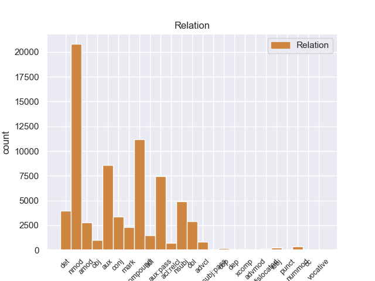
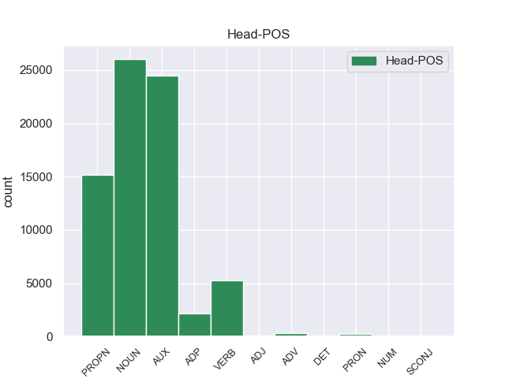
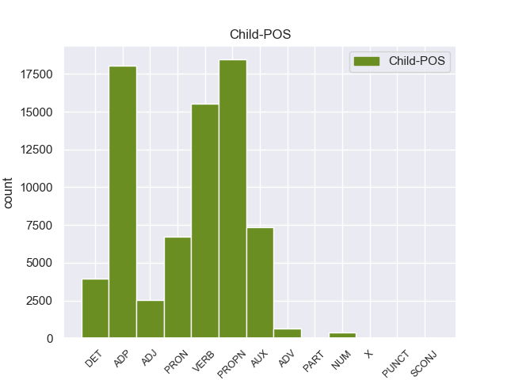

Distribution of features within this leaf



Agreement Rules sorted by frequency.
- When the dependent token is the nominal modifier(nmod) of the head token, and the dependent token is ADP.
1 उन्होंने _ _ _ _ 0 _ _ _
2 यहां _ _ _ _ 0 _ _ _
3 वेटिकन _ _ _ _ 0 _ _ _
4 दूतावास _ _ _ _ 0 _ _ _
5 में _ _ _ _ 0 _ _ _
6 एक _ _ _ _ 0 _ _ _
7 शोक _ _ _ _ 0 _ _ _
8 पुस्तिका _ _ _ _ 0 _ _ _
9 पर _ _ _ _ 0 _ _ _
10 हस्ताक्षर _ _ _ _ 0 _ _ _
11 कर _ _ _ _ 0 _ _ _
12 पोप _ _ _ _ 0 _ _ _
13 जॉन _ _ _ _ 0 _ _ _
14 पॉल _ _ _ _ 0 _ _ _
15 द्वितीय _ _ _ _ 0 _ _ _
16 के का ADP PSP AdpType=Post|Case=Acc|Gender=Masc|Number=Sing 17 nmod _ ChunkId=NP6|ChunkType=child|Translit=ke
17 निधन निधन NOUN NN Case=Acc|Gender=Masc|Number=Sing|Person=3 0 _ _ _
18 पर _ _ _ _ 0 _ _ _
19 गहरा _ _ _ _ 0 _ _ _
20 दुख _ _ _ _ 0 _ _ _
21 प्रकट _ _ _ _ 0 _ _ _
22 किया _ _ _ _ 0 _ _ _
23 । _ _ _ _ 0 _ _ _
1 उन्होंने _ _ _ _ 0 _ _ _
2 यहां _ _ _ _ 0 _ _ _
3 वेटिकन _ _ _ _ 0 _ _ _
4 दूतावास _ _ _ _ 0 _ _ _
5 में _ _ _ _ 0 _ _ _
6 एक _ _ _ _ 0 _ _ _
7 शोक _ _ _ _ 0 _ _ _
8 पुस्तिका _ _ _ _ 0 _ _ _
9 पर _ _ _ _ 0 _ _ _
10 हस्ताक्षर _ _ _ _ 0 _ _ _
11 कर _ _ _ _ 0 _ _ _
12 पोप _ _ _ _ 0 _ _ _
13 जॉन _ _ _ _ 0 _ _ _
14 पॉल पॉल PROPN NNPC Case=Nom|Gender=Masc|Number=Sing|Person=3 15 compound _ ChunkId=NP6|ChunkType=child|Tam=0|Translit=pôla|Vib=0
15 द्वितीय द्वितीय PROPN NNP Case=Acc|Gender=Masc|Number=Sing|Person=3 0 _ _ _
16 के _ _ _ _ 0 _ _ _
17 निधन _ _ _ _ 0 _ _ _
18 पर _ _ _ _ 0 _ _ _
19 गहरा _ _ _ _ 0 _ _ _
20 दुख _ _ _ _ 0 _ _ _
21 प्रकट _ _ _ _ 0 _ _ _
22 किया _ _ _ _ 0 _ _ _
23 । _ _ _ _ 0 _ _ _
1 दलाई _ _ _ _ 0 _ _ _
2 लामा _ _ _ _ 0 _ _ _
3 ने _ _ _ _ 0 _ _ _
4 भारत _ _ _ _ 0 _ _ _
5 और _ _ _ _ 0 _ _ _
6 चीन _ _ _ _ 0 _ _ _
7 के _ _ _ _ 0 _ _ _
8 रिश्ते _ _ _ _ 0 _ _ _
9 में _ _ _ _ 0 _ _ _
10 आ आ VERB VM Number=Sing|Person=3 11 aux _ ChunkId=VGNF|ChunkType=head|Tam=0|Translit=ā|Vib=0_रह+या
11 रहे रह AUX VAUX Aspect=Perf|Gender=Masc|Number=Sing|Person=3|VerbForm=Part 0 _ _ _
12 सुधार _ _ _ _ 0 _ _ _
13 की _ _ _ _ 0 _ _ _
14 भी _ _ _ _ 0 _ _ _
15 प्रशंसा _ _ _ _ 0 _ _ _
16 की _ _ _ _ 0 _ _ _
17 । _ _ _ _ 0 _ _ _
1 उन्होंने _ _ _ _ 0 _ _ _
2 कहा _ _ _ _ 0 _ _ _
3 कि _ _ _ _ 0 _ _ _
4 चीन _ _ _ _ 0 _ _ _
5 तिब्बत _ _ _ _ 0 _ _ _
6 को _ _ _ _ 0 _ _ _
7 व्यापक _ _ _ _ 0 _ _ _
8 स्वायत्तता _ _ _ _ 0 _ _ _
9 देकर _ _ _ _ 0 _ _ _
10 इस _ _ _ _ 0 _ _ _
11 समस्या _ _ _ _ 0 _ _ _
12 के _ _ _ _ 0 _ _ _
13 समाधान _ _ _ _ 0 _ _ _
14 का _ _ _ _ 0 _ _ _
15 रास्ता _ _ _ _ 0 _ _ _
16 साफ _ _ _ _ 0 _ _ _
17 कर कर VERB VM Gender=Masc|Number=Sing|Person=3|Voice=Act 19 aux:pass _ ChunkId=VGF2|ChunkType=head|Stype=declarative|Tam=0|Translit=kara|Vib=0_सक+ता_है
18 सकता _ _ _ _ 0 _ _ _
19 है है AUX VAUX Mood=Ind|Number=Sing|Person=3|Tense=Pres|VerbForm=Fin 0 _ _ _
20 । _ _ _ _ 0 _ _ _
1 इन यह DET DEM Case=Acc|Number=Plur|Person=3|PronType=Dem 3 det _ ChunkId=NP|ChunkType=child|Translit=ina
2 दोनों _ _ _ _ 0 _ _ _
3 देशों देश NOUN NN Case=Acc|Gender=Masc|Number=Plur|Person=3 0 _ _ _
4 के _ _ _ _ 0 _ _ _
5 बीच _ _ _ _ 0 _ _ _
6 रिश्ते _ _ _ _ 0 _ _ _
7 में _ _ _ _ 0 _ _ _
8 सुधार _ _ _ _ 0 _ _ _
9 से _ _ _ _ 0 _ _ _
10 करोड़ों _ _ _ _ 0 _ _ _
11 लोगों _ _ _ _ 0 _ _ _
12 का _ _ _ _ 0 _ _ _
13 भला _ _ _ _ 0 _ _ _
14 होगा _ _ _ _ 0 _ _ _
15 । _ _ _ _ 0 _ _ _
1 ७० _ _ _ _ 0 _ _ _
2 वर्षीय _ _ _ _ 0 _ _ _
3 इस _ _ _ _ 0 _ _ _
4 अहिंसावादी _ _ _ _ 0 _ _ _
5 तिब्बती _ _ _ _ 0 _ _ _
6 नेता _ _ _ _ 0 _ _ _
7 ने _ _ _ _ 0 _ _ _
8 यह _ _ _ _ 0 _ _ _
9 भी _ _ _ _ 0 _ _ _
10 कहा _ _ _ _ 0 _ _ _
11 कि _ _ _ _ 0 _ _ _
12 वे _ _ _ _ 0 _ _ _
13 चीन _ _ _ _ 0 _ _ _
14 से _ _ _ _ 0 _ _ _
15 अलगाव _ _ _ _ 0 _ _ _
16 की _ _ _ _ 0 _ _ _
17 बात _ _ _ _ 0 _ _ _
18 नहीं _ _ _ _ 0 _ _ _
19 कर _ _ _ _ 0 _ _ _
20 रहे _ _ _ _ 0 _ _ _
21 हैं _ _ _ _ 0 _ _ _
22 बल्कि _ _ _ _ 0 _ _ _
23 वे _ _ _ _ 0 _ _ _
24 तो _ _ _ _ 0 _ _ _
25 चीनी _ _ _ _ 0 _ _ _
26 संविधान _ _ _ _ 0 _ _ _
27 के _ _ _ _ 0 _ _ _
28 दायरे _ _ _ _ 0 _ _ _
29 में _ _ _ _ 0 _ _ _
30 ही _ _ _ _ 0 _ _ _
31 तिब्बत तिब्बत PROPN NNP Case=Nom|Gender=Masc|Number=Sing|Person=3 32 nmod _ ChunkId=NP10|ChunkType=child|Tam=0|Translit=tibbata|Vib=0
32 समस्या समस्या NOUN NN Case=Acc|Gender=Fem|Number=Sing|Person=3 0 _ _ _
33 का _ _ _ _ 0 _ _ _
34 हल _ _ _ _ 0 _ _ _
35 चाहते _ _ _ _ 0 _ _ _
36 हैं _ _ _ _ 0 _ _ _
37 । _ _ _ _ 0 _ _ _
1 उन्होंने वह PRON PRP Case=Acc,Erg|Number=Sing|Person=3|Polite=Form|PronType=Prs 22 nsubj _ ChunkId=NP|ChunkType=head|Tam=ne|Translit=unhoṁne|Vib=ने
2 यहां _ _ _ _ 0 _ _ _
3 वेटिकन _ _ _ _ 0 _ _ _
4 दूतावास _ _ _ _ 0 _ _ _
5 में _ _ _ _ 0 _ _ _
6 एक _ _ _ _ 0 _ _ _
7 शोक _ _ _ _ 0 _ _ _
8 पुस्तिका _ _ _ _ 0 _ _ _
9 पर _ _ _ _ 0 _ _ _
10 हस्ताक्षर _ _ _ _ 0 _ _ _
11 कर _ _ _ _ 0 _ _ _
12 पोप _ _ _ _ 0 _ _ _
13 जॉन _ _ _ _ 0 _ _ _
14 पॉल _ _ _ _ 0 _ _ _
15 द्वितीय _ _ _ _ 0 _ _ _
16 के _ _ _ _ 0 _ _ _
17 निधन _ _ _ _ 0 _ _ _
18 पर _ _ _ _ 0 _ _ _
19 गहरा _ _ _ _ 0 _ _ _
20 दुख _ _ _ _ 0 _ _ _
21 प्रकट _ _ _ _ 0 _ _ _
22 किया कर VERB VM Aspect=Perf|Gender=Masc|Number=Sing|VerbForm=Part|Voice=Act 0 _ _ _
23 । _ _ _ _ 0 _ _ _
1 उन्होंने _ _ _ _ 0 _ _ _
2 कहा _ _ _ _ 0 _ _ _
3 कि _ _ _ _ 0 _ _ _
4 चीन _ _ _ _ 0 _ _ _
5 तिब्बत _ _ _ _ 0 _ _ _
6 को _ _ _ _ 0 _ _ _
7 व्यापक _ _ _ _ 0 _ _ _
8 स्वायत्तता _ _ _ _ 0 _ _ _
9 देकर _ _ _ _ 0 _ _ _
10 इस _ _ _ _ 0 _ _ _
11 समस्या _ _ _ _ 0 _ _ _
12 के _ _ _ _ 0 _ _ _
13 समाधान _ _ _ _ 0 _ _ _
14 का _ _ _ _ 0 _ _ _
15 रास्ता _ _ _ _ 0 _ _ _
16 साफ _ _ _ _ 0 _ _ _
17 कर _ _ _ _ 0 _ _ _
18 सकता सक AUX VAUX Aspect=Imp|Gender=Masc|Number=Sing|VerbForm=Part 0 _ _ _
19 है है AUX VAUX Mood=Ind|Number=Sing|Person=3|Tense=Pres|VerbForm=Fin 18 aux _ ChunkId=VGF2|ChunkType=child|Tam=hE|Translit=hai|Vib=है
20 । _ _ _ _ 0 _ _ _
1 दलाई _ _ _ _ 0 _ _ _
2 लामा _ _ _ _ 0 _ _ _
3 ने _ _ _ _ 0 _ _ _
4 कहा _ _ _ _ 0 _ _ _
5 कि _ _ _ _ 0 _ _ _
6 मैं _ _ _ _ 0 _ _ _
7 तिब्बती _ _ _ _ 0 _ _ _
8 समस्या _ _ _ _ 0 _ _ _
9 का _ _ _ _ 0 _ _ _
10 सार्थक _ _ _ _ 0 _ _ _
11 और _ _ _ _ 0 _ _ _
12 मान्य _ _ _ _ 0 _ _ _
13 हल _ _ _ _ 0 _ _ _
14 ढूंढ़ने ढूंढ़ VERB VM Case=Acc|Number=Sing|VerbForm=Inf 15 mark _ ChunkId=VGNN|ChunkType=head|Tam=nA|Translit=ḍhūṁṛhane|Vib=ना_का
15 की का ADP PSP AdpType=Post|Case=Acc|Gender=Fem|Number=Sing 0 _ _ _
16 कोशिश _ _ _ _ 0 _ _ _
17 में _ _ _ _ 0 _ _ _
18 हूं _ _ _ _ 0 _ _ _
19 । _ _ _ _ 0 _ _ _
1 उन्होंने _ _ _ _ 0 _ _ _
2 यहां _ _ _ _ 0 _ _ _
3 वेटिकन _ _ _ _ 0 _ _ _
4 दूतावास _ _ _ _ 0 _ _ _
5 में _ _ _ _ 0 _ _ _
6 एक _ _ _ _ 0 _ _ _
7 शोक _ _ _ _ 0 _ _ _
8 पुस्तिका _ _ _ _ 0 _ _ _
9 पर _ _ _ _ 0 _ _ _
10 हस्ताक्षर _ _ _ _ 0 _ _ _
11 कर _ _ _ _ 0 _ _ _
12 पोप _ _ _ _ 0 _ _ _
13 जॉन _ _ _ _ 0 _ _ _
14 पॉल _ _ _ _ 0 _ _ _
15 द्वितीय _ _ _ _ 0 _ _ _
16 के _ _ _ _ 0 _ _ _
17 निधन _ _ _ _ 0 _ _ _
18 पर _ _ _ _ 0 _ _ _
19 गहरा गहरा ADJ JJ Case=Nom|Gender=Masc|Number=Sing 20 amod _ ChunkId=NP8|ChunkType=child|Translit=gaharā
20 दुख दुख NOUN NN Case=Nom|Gender=Masc|Number=Sing|Person=3 0 _ _ _
21 प्रकट _ _ _ _ 0 _ _ _
22 किया _ _ _ _ 0 _ _ _
23 । _ _ _ _ 0 _ _ _
1 उन्होंने _ _ _ _ 0 _ _ _
2 यह _ _ _ _ 0 _ _ _
3 भी _ _ _ _ 0 _ _ _
4 कहा _ _ _ _ 0 _ _ _
5 कि _ _ _ _ 0 _ _ _
6 अब _ _ _ _ 0 _ _ _
7 चीन _ _ _ _ 0 _ _ _
8 का _ _ _ _ 0 _ _ _
9 हृदय _ _ _ _ 0 _ _ _
10 परिवर्तन _ _ _ _ 0 _ _ _
11 होता _ _ _ _ 0 _ _ _
12 जा _ _ _ _ 0 _ _ _
13 रहा रह AUX VAUX Aspect=Perf|Gender=Masc|Number=Sing|VerbForm=Part 0 _ _ _
14 है है AUX VAUX Mood=Ind|Number=Sing|Person=3|Tense=Pres|VerbForm=Fin 13 aux:pass _ ChunkId=VGF2|ChunkType=child|Tam=hE|Translit=hai|Vib=है
15 । _ _ _ _ 0 _ _ _
1 उन्होंने _ _ _ _ 0 _ _ _
2 कहा _ _ _ _ 0 _ _ _
3 कि _ _ _ _ 0 _ _ _
4 भारत भारत PROPN NNP Case=Nom|Gender=Masc|Number=Sing|Person=3 0 _ _ _
5 और _ _ _ _ 0 _ _ _
6 चीन चीन PROPN NNP Case=Nom|Gender=Masc|Number=Sing|Person=3 4 conj _ ChunkId=NP3|ChunkType=head|Tam=0|Translit=cīna|Vib=0
7 सर्वाधिक _ _ _ _ 0 _ _ _
8 आबादी _ _ _ _ 0 _ _ _
9 वाले _ _ _ _ 0 _ _ _
10 देश _ _ _ _ 0 _ _ _
11 हैं _ _ _ _ 0 _ _ _
12 । _ _ _ _ 0 _ _ _
1 उन्होंने _ _ _ _ 0 _ _ _
2 कहा _ _ _ _ 0 _ _ _
3 कि _ _ _ _ 0 _ _ _
4 चीन चीन PROPN NNP Case=Nom|Gender=Masc|Number=Sing|Person=3 18 nsubj _ ChunkId=NP2|ChunkType=head|Tam=0|Translit=cīna|Vib=0
5 तिब्बत _ _ _ _ 0 _ _ _
6 को _ _ _ _ 0 _ _ _
7 व्यापक _ _ _ _ 0 _ _ _
8 स्वायत्तता _ _ _ _ 0 _ _ _
9 देकर _ _ _ _ 0 _ _ _
10 इस _ _ _ _ 0 _ _ _
11 समस्या _ _ _ _ 0 _ _ _
12 के _ _ _ _ 0 _ _ _
13 समाधान _ _ _ _ 0 _ _ _
14 का _ _ _ _ 0 _ _ _
15 रास्ता _ _ _ _ 0 _ _ _
16 साफ _ _ _ _ 0 _ _ _
17 कर _ _ _ _ 0 _ _ _
18 सकता सक AUX VAUX Aspect=Imp|Gender=Masc|Number=Sing|VerbForm=Part 0 _ _ _
19 है _ _ _ _ 0 _ _ _
20 । _ _ _ _ 0 _ _ _
1 मैं _ _ _ _ 0 _ _ _
2 स्पष्ट _ _ _ _ 0 _ _ _
3 कर _ _ _ _ 0 _ _ _
4 देना _ _ _ _ 0 _ _ _
5 चाहता _ _ _ _ 0 _ _ _
6 हूं _ _ _ _ 0 _ _ _
7 कि _ _ _ _ 0 _ _ _
8 मेरा मैं PRON PRP Case=Acc,Gen|Gender=Masc|Number=Sing|Person=1|Poss=Yes|PronType=Prs 9 nmod _ ChunkId=NP2|ChunkType=head|Tam=kA|Translit=merā|Vib=का
9 दृष्टिकोण दृष्टिकोण NOUN NN Case=Nom|Gender=Masc|Number=Sing|Person=3 0 _ _ _
10 अलगाववादी _ _ _ _ 0 _ _ _
11 नहीं _ _ _ _ 0 _ _ _
12 है _ _ _ _ 0 _ _ _
13 । _ _ _ _ 0 _ _ _
1 इन _ _ _ _ 0 _ _ _
2 दोनों _ _ _ _ 0 _ _ _
3 देशों _ _ _ _ 0 _ _ _
4 के _ _ _ _ 0 _ _ _
5 बीच बीच ADP NST AdpType=Post|Case=Nom|Gender=Masc|Number=Sing|Person=3 14 obl _ AltTag=ADP-NOUN|ChunkId=NP|ChunkType=child|Translit=bīca
6 रिश्ते _ _ _ _ 0 _ _ _
7 में _ _ _ _ 0 _ _ _
8 सुधार _ _ _ _ 0 _ _ _
9 से _ _ _ _ 0 _ _ _
10 करोड़ों _ _ _ _ 0 _ _ _
11 लोगों _ _ _ _ 0 _ _ _
12 का _ _ _ _ 0 _ _ _
13 भला _ _ _ _ 0 _ _ _
14 होगा हो VERB VM Gender=Masc|Mood=Ind|Number=Sing|Person=3|Tense=Fut|VerbForm=Fin|Voice=Act 0 _ _ _
15 । _ _ _ _ 0 _ _ _
1 इस _ _ _ _ 0 _ _ _
2 ट्रेन _ _ _ _ 0 _ _ _
3 में _ _ _ _ 0 _ _ _
4 पैलेस _ _ _ _ 0 _ _ _
5 ऑन _ _ _ _ 0 _ _ _
6 व्हील्स _ _ _ _ 0 _ _ _
7 की _ _ _ _ 0 _ _ _
8 तरह _ _ _ _ 0 _ _ _
9 शानो _ _ _ _ 0 _ _ _
10 - _ _ _ _ 0 _ _ _
11 शौकत _ _ _ _ 0 _ _ _
12 भरे भर VERB VM Aspect=Perf|Gender=Masc|Number=Sing|VerbForm=Part 13 acl _ ChunkId=VGNF|ChunkType=head|Tam=yA|Translit=bhare|Vib=या
13 सफ़र सफर NOUN NN Case=Acc|Gender=Masc|Number=Sing|Person=3 0 _ _ _
14 का _ _ _ _ 0 _ _ _
15 अहसास _ _ _ _ 0 _ _ _
16 तो _ _ _ _ 0 _ _ _
17 नहीं _ _ _ _ 0 _ _ _
18 होगा _ _ _ _ 0 _ _ _
19 लेकिन _ _ _ _ 0 _ _ _
20 , _ _ _ _ 0 _ _ _
21 आप _ _ _ _ 0 _ _ _
22 कम _ _ _ _ 0 _ _ _
23 खर्च _ _ _ _ 0 _ _ _
24 में _ _ _ _ 0 _ _ _
25 भारत _ _ _ _ 0 _ _ _
26 दर्शन _ _ _ _ 0 _ _ _
27 के _ _ _ _ 0 _ _ _
28 साथ _ _ _ _ 0 _ _ _
29 - _ _ _ _ 0 _ _ _
30 साथ _ _ _ _ 0 _ _ _
31 चारों _ _ _ _ 0 _ _ _
32 धाम _ _ _ _ 0 _ _ _
33 की _ _ _ _ 0 _ _ _
34 यात्रा _ _ _ _ 0 _ _ _
35 के _ _ _ _ 0 _ _ _
36 सपने _ _ _ _ 0 _ _ _
37 को _ _ _ _ 0 _ _ _
38 साकार _ _ _ _ 0 _ _ _
39 कर _ _ _ _ 0 _ _ _
40 सकते _ _ _ _ 0 _ _ _
41 हैं _ _ _ _ 0 _ _ _
42 । _ _ _ _ 0 _ _ _
1 मार्च _ _ _ _ 0 _ _ _
2 को _ _ _ _ 0 _ _ _
3 काफी _ _ _ _ 0 _ _ _
4 पब्लिसिटी _ _ _ _ 0 _ _ _
5 मिली मिल VERB VM Aspect=Perf|Gender=Fem|Number=Sing|VerbForm=Part|Voice=Act 0 _ _ _
6 और _ _ _ _ 0 _ _ _
7 बापू _ _ _ _ 0 _ _ _
8 के _ _ _ _ 0 _ _ _
9 संदेश _ _ _ _ 0 _ _ _
10 को _ _ _ _ 0 _ _ _
11 जन _ _ _ _ 0 _ _ _
12 जन _ _ _ _ 0 _ _ _
13 तक _ _ _ _ 0 _ _ _
14 पहुंचाया _ _ _ _ 0 _ _ _
15 गया जा AUX VAUX Aspect=Perf|Gender=Masc|Number=Sing|VerbForm=Part 5 conj _ ChunkId=VGF2|ChunkType=child|Tam=yA1|Translit=gayā|Vib=या१
16 । _ _ _ _ 0 _ _ _
1 ७० _ _ _ _ 0 _ _ _
2 वर्षीय _ _ _ _ 0 _ _ _
3 इस _ _ _ _ 0 _ _ _
4 अहिंसावादी _ _ _ _ 0 _ _ _
5 तिब्बती _ _ _ _ 0 _ _ _
6 नेता _ _ _ _ 0 _ _ _
7 ने _ _ _ _ 0 _ _ _
8 यह यह PRON PRP Case=Nom|Number=Sing|Person=3|PronType=Prs 10 obj _ ChunkId=NP2|ChunkType=head|Tam=0|Translit=yaha|Vib=0
9 भी _ _ _ _ 0 _ _ _
10 कहा कह VERB VM Aspect=Perf|Gender=Masc|Number=Sing|VerbForm=Part|Voice=Act 0 _ _ _
11 कि _ _ _ _ 0 _ _ _
12 वे _ _ _ _ 0 _ _ _
13 चीन _ _ _ _ 0 _ _ _
14 से _ _ _ _ 0 _ _ _
15 अलगाव _ _ _ _ 0 _ _ _
16 की _ _ _ _ 0 _ _ _
17 बात _ _ _ _ 0 _ _ _
18 नहीं _ _ _ _ 0 _ _ _
19 कर _ _ _ _ 0 _ _ _
20 रहे _ _ _ _ 0 _ _ _
21 हैं _ _ _ _ 0 _ _ _
22 बल्कि _ _ _ _ 0 _ _ _
23 वे _ _ _ _ 0 _ _ _
24 तो _ _ _ _ 0 _ _ _
25 चीनी _ _ _ _ 0 _ _ _
26 संविधान _ _ _ _ 0 _ _ _
27 के _ _ _ _ 0 _ _ _
28 दायरे _ _ _ _ 0 _ _ _
29 में _ _ _ _ 0 _ _ _
30 ही _ _ _ _ 0 _ _ _
31 तिब्बत _ _ _ _ 0 _ _ _
32 समस्या _ _ _ _ 0 _ _ _
33 का _ _ _ _ 0 _ _ _
34 हल _ _ _ _ 0 _ _ _
35 चाहते _ _ _ _ 0 _ _ _
36 हैं _ _ _ _ 0 _ _ _
37 । _ _ _ _ 0 _ _ _
1 ७० _ _ _ _ 0 _ _ _
2 वर्षीय _ _ _ _ 0 _ _ _
3 इस _ _ _ _ 0 _ _ _
4 अहिंसावादी _ _ _ _ 0 _ _ _
5 तिब्बती _ _ _ _ 0 _ _ _
6 नेता _ _ _ _ 0 _ _ _
7 ने _ _ _ _ 0 _ _ _
8 यह _ _ _ _ 0 _ _ _
9 भी _ _ _ _ 0 _ _ _
10 कहा _ _ _ _ 0 _ _ _
11 कि _ _ _ _ 0 _ _ _
12 वे _ _ _ _ 0 _ _ _
13 चीन _ _ _ _ 0 _ _ _
14 से _ _ _ _ 0 _ _ _
15 अलगाव _ _ _ _ 0 _ _ _
16 की _ _ _ _ 0 _ _ _
17 बात _ _ _ _ 0 _ _ _
18 नहीं _ _ _ _ 0 _ _ _
19 कर _ _ _ _ 0 _ _ _
20 रहे _ _ _ _ 0 _ _ _
21 हैं है AUX VAUX Mood=Ind|Number=Sing|Person=3|Polite=Form|Tense=Pres|VerbForm=Fin 0 _ _ _
22 बल्कि _ _ _ _ 0 _ _ _
23 वे _ _ _ _ 0 _ _ _
24 तो _ _ _ _ 0 _ _ _
25 चीनी _ _ _ _ 0 _ _ _
26 संविधान _ _ _ _ 0 _ _ _
27 के _ _ _ _ 0 _ _ _
28 दायरे _ _ _ _ 0 _ _ _
29 में _ _ _ _ 0 _ _ _
30 ही _ _ _ _ 0 _ _ _
31 तिब्बत _ _ _ _ 0 _ _ _
32 समस्या _ _ _ _ 0 _ _ _
33 का _ _ _ _ 0 _ _ _
34 हल _ _ _ _ 0 _ _ _
35 चाहते _ _ _ _ 0 _ _ _
36 हैं है AUX VAUX Mood=Ind|Number=Sing|Person=3|Polite=Form|Tense=Pres|VerbForm=Fin 21 advcl _ ChunkId=VGF3|ChunkType=child|Tam=hE|Translit=haiṁ|Vib=है
37 । _ _ _ _ 0 _ _ _
1 दलाई _ _ _ _ 0 _ _ _
2 लामा _ _ _ _ 0 _ _ _
3 ने _ _ _ _ 0 _ _ _
4 भारत _ _ _ _ 0 _ _ _
5 और _ _ _ _ 0 _ _ _
6 चीन _ _ _ _ 0 _ _ _
7 के _ _ _ _ 0 _ _ _
8 रिश्ते _ _ _ _ 0 _ _ _
9 में _ _ _ _ 0 _ _ _
10 आ _ _ _ _ 0 _ _ _
11 रहे रह AUX VAUX Aspect=Perf|Gender=Masc|Number=Sing|Person=3|VerbForm=Part 12 acl _ ChunkId=VGNF|ChunkType=child|Tam=yA|Translit=rahe|Vib=या
12 सुधार सुधार NOUN NN Case=Acc|Gender=Masc|Number=Sing|Person=3 0 _ _ _
13 की _ _ _ _ 0 _ _ _
14 भी _ _ _ _ 0 _ _ _
15 प्रशंसा _ _ _ _ 0 _ _ _
16 की _ _ _ _ 0 _ _ _
17 । _ _ _ _ 0 _ _ _
1 अभिजात्य _ _ _ _ 0 _ _ _
2 व _ _ _ _ 0 _ _ _
3 उच्च _ _ _ _ 0 _ _ _
4 वर्ग _ _ _ _ 0 _ _ _
5 के _ _ _ _ 0 _ _ _
6 पर्यटकों _ _ _ _ 0 _ _ _
7 के _ _ _ _ 0 _ _ _
8 लिए _ _ _ _ 0 _ _ _
9 चलाई _ _ _ _ 0 _ _ _
10 जाने _ _ _ _ 0 _ _ _
11 वाली वाला ADP PSP AdpType=Post|Case=Nom|Gender=Fem|Number=Plur 14 amod _ ChunkId=VGNN|ChunkType=child|Translit=vālī
12 पैलेस _ _ _ _ 0 _ _ _
13 ऑन _ _ _ _ 0 _ _ _
14 व्हील्स व्हील्स PROPN NNP Case=Nom|Gender=Masc|Number=Plur|Person=3 0 _ _ _
15 अक्टूबर _ _ _ _ 0 _ _ _
16 के _ _ _ _ 0 _ _ _
17 दूसरे _ _ _ _ 0 _ _ _
18 सप्ताह _ _ _ _ 0 _ _ _
19 में _ _ _ _ 0 _ _ _
20 अपना _ _ _ _ 0 _ _ _
21 सफर _ _ _ _ 0 _ _ _
22 शुरू _ _ _ _ 0 _ _ _
23 करती _ _ _ _ 0 _ _ _
24 है _ _ _ _ 0 _ _ _
25 । _ _ _ _ 0 _ _ _
1 यह _ _ _ _ 0 _ _ _
2 कहना _ _ _ _ 0 _ _ _
3 है _ _ _ _ 0 _ _ _
4 अमेरिका अमेरिका PROPN NNP Case=Acc|Gender=Masc|Number=Sing|Person=3 0 _ _ _
5 का _ _ _ _ 0 _ _ _
6 , _ _ _ _ 0 _ _ _
7 जो _ _ _ _ 0 _ _ _
8 सऊदी _ _ _ _ 0 _ _ _
9 अरब _ _ _ _ 0 _ _ _
10 और _ _ _ _ 0 _ _ _
11 अन्य _ _ _ _ 0 _ _ _
12 अरब _ _ _ _ 0 _ _ _
13 देशों _ _ _ _ 0 _ _ _
14 को _ _ _ _ 0 _ _ _
15 परमाणु _ _ _ _ 0 _ _ _
16 तक़नीक _ _ _ _ 0 _ _ _
17 बेचने _ _ _ _ 0 _ _ _
18 में _ _ _ _ 0 _ _ _
19 खान _ _ _ _ 0 _ _ _
20 नेटवर्क _ _ _ _ 0 _ _ _
21 की _ _ _ _ 0 _ _ _
22 भूमिका _ _ _ _ 0 _ _ _
23 का _ _ _ _ 0 _ _ _
24 पता _ _ _ _ 0 _ _ _
25 लगा _ _ _ _ 0 _ _ _
26 रहा रह AUX VAUX Aspect=Perf|Gender=Masc|Number=Sing|VerbForm=Part 4 acl:relcl _ ChunkId=VGF2|ChunkType=child|Tam=yA|Translit=rahā|Vib=या
27 है _ _ _ _ 0 _ _ _
28 । _ _ _ _ 0 _ _ _
1 इस _ _ _ _ 0 _ _ _
2 दौरान दौरान ADV NST AdpType=Post|Case=Nom|Gender=Masc|Number=Sing|Person=3 11 obl _ AltTag=ADV-NOUN|ChunkId=NP|ChunkType=head|Translit=daurāna
3 वे _ _ _ _ 0 _ _ _
4 अफ्रीका _ _ _ _ 0 _ _ _
5 , _ _ _ _ 0 _ _ _
6 मध्य _ _ _ _ 0 _ _ _
7 एशिया _ _ _ _ 0 _ _ _
8 और _ _ _ _ 0 _ _ _
9 मध्य _ _ _ _ 0 _ _ _
10 पूर्व _ _ _ _ 0 _ _ _
11 गए जा VERB VM Aspect=Perf|Gender=Masc|Number=Sing|Person=3|Polite=Form|VerbForm=Part|Voice=Act 0 _ _ _
12 । _ _ _ _ 0 _ _ _
1 इससे यह PRON PRP Case=Acc,Ins|Number=Sing|Person=3|PronType=Prs 6 obl _ ChunkId=NP|ChunkType=head|Tam=se|Translit=isase|Vib=से
2 पार्टी _ _ _ _ 0 _ _ _
3 की _ _ _ _ 0 _ _ _
4 छवि _ _ _ _ 0 _ _ _
5 सुधरी _ _ _ _ 0 _ _ _
6 है है AUX VAUX Mood=Ind|Number=Sing|Person=3|Tense=Pres|VerbForm=Fin 0 _ _ _
7 । _ _ _ _ 0 _ _ _
1 इन _ _ _ _ 0 _ _ _
2 दोनों _ _ _ _ 0 _ _ _
3 देशों _ _ _ _ 0 _ _ _
4 के _ _ _ _ 0 _ _ _
5 बीच _ _ _ _ 0 _ _ _
6 रिश्ते _ _ _ _ 0 _ _ _
7 में _ _ _ _ 0 _ _ _
8 सुधार _ _ _ _ 0 _ _ _
9 से _ _ _ _ 0 _ _ _
10 करोड़ों करोड NUM QC Number=Plur|NumType=Card 11 nummod _ ChunkId=NP4|ChunkType=child|Translit=karoṛoṁ
11 लोगों लोग NOUN NN Case=Acc|Gender=Masc|Number=Plur|Person=3 0 _ _ _
12 का _ _ _ _ 0 _ _ _
13 भला _ _ _ _ 0 _ _ _
14 होगा _ _ _ _ 0 _ _ _
15 । _ _ _ _ 0 _ _ _
1 पर्यवेक्षकों _ _ _ _ 0 _ _ _
2 का _ _ _ _ 0 _ _ _
3 कहना _ _ _ _ 0 _ _ _
4 है _ _ _ _ 0 _ _ _
5 कि _ _ _ _ 0 _ _ _
6 इस _ _ _ _ 0 _ _ _
7 मार्च _ _ _ _ 0 _ _ _
8 के _ _ _ _ 0 _ _ _
9 दौरान _ _ _ _ 0 _ _ _
10 कांग्रेसियों _ _ _ _ 0 _ _ _
11 ने _ _ _ _ 0 _ _ _
12 भाजपा _ _ _ _ 0 _ _ _
13 का _ _ _ _ 0 _ _ _
14 जिक्र _ _ _ _ 0 _ _ _
15 करने _ _ _ _ 0 _ _ _
16 से _ _ _ _ 0 _ _ _
17 परहेज _ _ _ _ 0 _ _ _
18 कर _ _ _ _ 0 _ _ _
19 लोगों _ _ _ _ 0 _ _ _
20 में _ _ _ _ 0 _ _ _
21 यह _ _ _ _ 0 _ _ _
22 संदेश _ _ _ _ 0 _ _ _
23 दिया _ _ _ _ 0 _ _ _
24 कि _ _ _ _ 0 _ _ _
25 वह _ _ _ _ 0 _ _ _
26 गांधीवादी _ _ _ _ 0 _ _ _
27 विरासत _ _ _ _ 0 _ _ _
28 को _ _ _ _ 0 _ _ _
29 लेकर _ _ _ _ 0 _ _ _
30 भाजपा भाजपा PROPN NNP Case=Acc|Gender=Fem|Number=Sing|Person=3 39 obl _ ChunkId=NP11|ChunkType=head|Tam=0|Translit=bhājapā|Vib=0
31 या _ _ _ _ 0 _ _ _
32 किसी _ _ _ _ 0 _ _ _
33 अन्य _ _ _ _ 0 _ _ _
34 पार्टी _ _ _ _ 0 _ _ _
35 से _ _ _ _ 0 _ _ _
36 टकराव _ _ _ _ 0 _ _ _
37 नहीं _ _ _ _ 0 _ _ _
38 चाहती _ _ _ _ 0 _ _ _
39 है है AUX VAUX Mood=Ind|Number=Sing|Person=3|Tense=Pres|VerbForm=Fin 0 _ _ _
40 । _ _ _ _ 0 _ _ _
1 यूं _ _ _ _ 0 _ _ _
2 तो _ _ _ _ 0 _ _ _
3 दलाई _ _ _ _ 0 _ _ _
4 लामा _ _ _ _ 0 _ _ _
5 ने _ _ _ _ 0 _ _ _
6 वेन _ _ _ _ 0 _ _ _
7 जियाबाओ _ _ _ _ 0 _ _ _
8 को _ _ _ _ 0 _ _ _
9 एक _ _ _ _ 0 _ _ _
10 एकाधिकारवादी _ _ _ _ 0 _ _ _
11 देश _ _ _ _ 0 _ _ _
12 का _ _ _ _ 0 _ _ _
13 नेता _ _ _ _ 0 _ _ _
14 करार _ _ _ _ 0 _ _ _
15 दिया दे VERB VM Aspect=Perf|Gender=Masc|Number=Sing|VerbForm=Part|Voice=Act 0 _ _ _
16 , _ _ _ _ 0 _ _ _
17 लेकिन _ _ _ _ 0 _ _ _
18 उन्होंने _ _ _ _ 0 _ _ _
19 जियाबाओ _ _ _ _ 0 _ _ _
20 को _ _ _ _ 0 _ _ _
21 पूर्ववर्ती _ _ _ _ 0 _ _ _
22 चीनी _ _ _ _ 0 _ _ _
23 प्रधानमंत्रियों _ _ _ _ 0 _ _ _
24 की _ _ _ _ 0 _ _ _
25 तुलना _ _ _ _ 0 _ _ _
26 में _ _ _ _ 0 _ _ _
27 अधिक _ _ _ _ 0 _ _ _
28 व्यावहारिक _ _ _ _ 0 _ _ _
29 , _ _ _ _ 0 _ _ _
30 उदार _ _ _ _ 0 _ _ _
31 और _ _ _ _ 0 _ _ _
32 दूरदर्शी _ _ _ _ 0 _ _ _
33 नेता _ _ _ _ 0 _ _ _
34 भी _ _ _ _ 0 _ _ _
35 करार _ _ _ _ 0 _ _ _
36 दिया दे VERB VM Aspect=Perf|Gender=Masc|Number=Sing|VerbForm=Part|Voice=Act 15 conj _ ChunkId=VGF2|ChunkType=head|Stype=declarative|Tam=yA|Translit=diyā|Vib=या
37 । _ _ _ _ 0 _ _ _
1 चीनी _ _ _ _ 0 _ _ _
2 प्रधानमंत्री _ _ _ _ 0 _ _ _
3 वेन _ _ _ _ 0 _ _ _
4 जियाबाओ _ _ _ _ 0 _ _ _
5 की _ _ _ _ 0 _ _ _
6 भारत _ _ _ _ 0 _ _ _
7 यात्रा _ _ _ _ 0 _ _ _
8 से _ _ _ _ 0 _ _ _
9 पहले _ _ _ _ 0 _ _ _
10 निर्वासित _ _ _ _ 0 _ _ _
11 तिब्बती _ _ _ _ 0 _ _ _
12 आध्यात्मिक _ _ _ _ 0 _ _ _
13 नेता _ _ _ _ 0 _ _ _
14 दलाई _ _ _ _ 0 _ _ _
15 लामा _ _ _ _ 0 _ _ _
16 ने _ _ _ _ 0 _ _ _
17 कहा _ _ _ _ 0 _ _ _
18 है _ _ _ _ 0 _ _ _
19 कि _ _ _ _ 0 _ _ _
20 चीनी _ _ _ _ 0 _ _ _
21 और _ _ _ _ 0 _ _ _
22 तिब्बती _ _ _ _ 0 _ _ _
23 एक एक PRON PRPC Case=Nom|Number=Sing|Person=3|PronType=Prs 0 _ _ _
24 - _ _ _ _ 0 _ _ _
25 दूसरे _ _ _ _ 0 _ _ _
26 की का ADP PSP AdpType=Post|Case=Acc|Gender=Fem|Number=Sing 23 conj _ ChunkId=NP5|ChunkType=child|Translit=kī
27 सांस्कृतिक _ _ _ _ 0 _ _ _
28 विशिष्टता _ _ _ _ 0 _ _ _
29 का _ _ _ _ 0 _ _ _
30 आदर _ _ _ _ 0 _ _ _
31 करते _ _ _ _ 0 _ _ _
32 हैं _ _ _ _ 0 _ _ _
33 । _ _ _ _ 0 _ _ _
1 उन्होंने _ _ _ _ 0 _ _ _
2 इसे यह PRON PRP Case=Acc,Dat|Number=Sing|Person=3|PronType=Prs 8 iobj _ ChunkId=NP2|ChunkType=head|Tam=ko|Translit=ise|Vib=को
3 चीनियों _ _ _ _ 0 _ _ _
4 का _ _ _ _ 0 _ _ _
5 हृदय _ _ _ _ 0 _ _ _
6 परिवर्तन _ _ _ _ 0 _ _ _
7 करार _ _ _ _ 0 _ _ _
8 दिया दे VERB VM Aspect=Perf|Gender=Masc|Number=Sing|VerbForm=Part|Voice=Act 0 _ _ _
9 । _ _ _ _ 0 _ _ _
1 इराक़ _ _ _ _ 0 _ _ _
2 में _ _ _ _ 0 _ _ _
3 सामूहिक _ _ _ _ 0 _ _ _
4 विनाश _ _ _ _ 0 _ _ _
5 के _ _ _ _ 0 _ _ _
6 हथियारों _ _ _ _ 0 _ _ _
7 का _ _ _ _ 0 _ _ _
8 हौवा _ _ _ _ 0 _ _ _
9 खड़ा _ _ _ _ 0 _ _ _
10 कर खड़ा VERB VM Gender=Masc|Number=Sing|Person=3|VerbForm=Conv 20 advcl _ ChunkId=VGNF|ChunkType=head|Tam=kara|Translit=kara|Vib=कर
11 बिना _ _ _ _ 0 _ _ _
12 पूरी _ _ _ _ 0 _ _ _
13 जानकारी _ _ _ _ 0 _ _ _
14 के _ _ _ _ 0 _ _ _
15 अमेरिका _ _ _ _ 0 _ _ _
16 ने _ _ _ _ 0 _ _ _
17 उस _ _ _ _ 0 _ _ _
18 पर _ _ _ _ 0 _ _ _
19 कहर _ _ _ _ 0 _ _ _
20 बरपाया बरपा VERB VM Aspect=Perf|Gender=Masc|Number=Sing|Person=3|VerbForm=Part|Voice=Act 0 _ _ _
21 । _ _ _ _ 0 _ _ _
1 अब _ _ _ _ 0 _ _ _
2 जनसंपर्क _ _ _ _ 0 _ _ _
3 का _ _ _ _ 0 _ _ _
4 हमारा _ _ _ _ 0 _ _ _
5 अनुभव _ _ _ _ 0 _ _ _
6 भी _ _ _ _ 0 _ _ _
7 गहरा गहरा ADJ JJ Gender=Masc|Number=Sing 9 compound _ ChunkId=JJP|ChunkType=head|Translit=gaharā
8 हो _ _ _ _ 0 _ _ _
9 गया जा AUX VAUX Aspect=Perf|Gender=Masc|Number=Sing|VerbForm=Part 0 _ _ _
10 है _ _ _ _ 0 _ _ _
11 । _ _ _ _ 0 _ _ _
1 एअरपोर्ट _ _ _ _ 0 _ _ _
2 सेंटॉर सेंटॉर PROPN NNP Case=Nom|Gender=Masc|Number=Sing|Person=3 12 obj _ ChunkId=NP|ChunkType=head|Tam=0|Translit=seṁṭôra|Vib=0
3 अप्रैल _ _ _ _ 0 _ _ _
4 2002 _ _ _ _ 0 _ _ _
5 में _ _ _ _ 0 _ _ _
6 83 _ _ _ _ 0 _ _ _
7 करोड़ _ _ _ _ 0 _ _ _
8 रुपये _ _ _ _ 0 _ _ _
9 में _ _ _ _ 0 _ _ _
10 बेच _ _ _ _ 0 _ _ _
11 दिया _ _ _ _ 0 _ _ _
12 गया जा AUX VAUX Aspect=Perf|Gender=Masc|Number=Sing|VerbForm=Part 0 _ _ _
13 । _ _ _ _ 0 _ _ _
1 वोल्कर _ _ _ _ 0 _ _ _
2 ने _ _ _ _ 0 _ _ _
3 बताया _ _ _ _ 0 _ _ _
4 कि _ _ _ _ 0 _ _ _
5 हमने _ _ _ _ 0 _ _ _
6 रिपोर्ट _ _ _ _ 0 _ _ _
7 में _ _ _ _ 0 _ _ _
8 जिस _ _ _ _ 0 _ _ _
9 भाषा _ _ _ _ 0 _ _ _
10 का _ _ _ _ 0 _ _ _
11 इस्तेमाल _ _ _ _ 0 _ _ _
12 किया कर VERB VM Aspect=Perf|Gender=Masc|Number=Sing|VerbForm=Part|Voice=Act 14 acl:relcl _ ChunkId=VGF2|ChunkType=head|SpaceAfter=No|Stype=declarative|Tam=yA|Translit=kiyā|Vib=या
13 , _ _ _ _ 0 _ _ _
14 उसमें वह PRON PRP Case=Acc,Ine|Number=Sing|Person=3|PronType=Prs 0 _ _ _
15 कहा _ _ _ _ 0 _ _ _
16 गया _ _ _ _ 0 _ _ _
17 था _ _ _ _ 0 _ _ _
18 कि _ _ _ _ 0 _ _ _
19 संयुक्त _ _ _ _ 0 _ _ _
20 राष्ट्र _ _ _ _ 0 _ _ _
21 के _ _ _ _ 0 _ _ _
22 मानक _ _ _ _ 0 _ _ _
23 पर _ _ _ _ 0 _ _ _
24 अन्नान _ _ _ _ 0 _ _ _
25 की _ _ _ _ 0 _ _ _
26 क्षमता _ _ _ _ 0 _ _ _
27 खरी _ _ _ _ 0 _ _ _
28 नहीं _ _ _ _ 0 _ _ _
29 उतरती _ _ _ _ 0 _ _ _
30 । _ _ _ _ 0 _ _ _
1 कैग _ _ _ _ 0 _ _ _
2 ने _ _ _ _ 0 _ _ _
3 शुक्रवार _ _ _ _ 0 _ _ _
4 को _ _ _ _ 0 _ _ _
5 संसद _ _ _ _ 0 _ _ _
6 में _ _ _ _ 0 _ _ _
7 पेश _ _ _ _ 0 _ _ _
8 अपनी _ _ _ _ 0 _ _ _
9 रिपोर्ट _ _ _ _ 0 _ _ _
10 में _ _ _ _ 0 _ _ _
11 कहा _ _ _ _ 0 _ _ _
12 कि _ _ _ _ 0 _ _ _
13 मुंबई _ _ _ _ 0 _ _ _
14 के _ _ _ _ 0 _ _ _
15 जुहू _ _ _ _ 0 _ _ _
16 सेंटॉर _ _ _ _ 0 _ _ _
17 और _ _ _ _ 0 _ _ _
18 एअरपोर्ट _ _ _ _ 0 _ _ _
19 सेंटॉर _ _ _ _ 0 _ _ _
20 होटलों _ _ _ _ 0 _ _ _
21 की _ _ _ _ 0 _ _ _
22 बिक्री _ _ _ _ 0 _ _ _
23 एकमात्र _ _ _ _ 0 _ _ _
24 बोली _ _ _ _ 0 _ _ _
25 के _ _ _ _ 0 _ _ _
26 आधार _ _ _ _ 0 _ _ _
27 पर _ _ _ _ 0 _ _ _
28 की _ _ _ _ 0 _ _ _
29 गई _ _ _ _ 0 _ _ _
30 थी _ _ _ _ 0 _ _ _
31 , _ _ _ _ 0 _ _ _
32 जबकि _ _ _ _ 0 _ _ _
33 इसे _ _ _ _ 0 _ _ _
34 कंपटीटिव _ _ _ _ 0 _ _ _
35 बिडिंग _ _ _ _ 0 _ _ _
36 ( _ _ _ _ 0 _ _ _
37 प्रतिस्पर्धात्मक _ _ _ _ 0 _ _ _
38 बोली _ _ _ _ 0 _ _ _
39 ) _ _ _ _ 0 _ _ _
40 के का ADP PSP AdpType=Post|Case=Acc|Gender=Masc|Number=Sing 41 dislocated _ ChunkId=FRAGP|ChunkType=head|Translit=ke
41 आधार आधार NOUN NN Case=Acc|Gender=Masc|Number=Sing|Person=3 0 _ _ _
42 पर _ _ _ _ 0 _ _ _
43 किया _ _ _ _ 0 _ _ _
44 जाना _ _ _ _ 0 _ _ _
45 चाहिए _ _ _ _ 0 _ _ _
46 था _ _ _ _ 0 _ _ _
47 । _ _ _ _ 0 _ _ _
1 अमेरिकी _ _ _ _ 0 _ _ _
2 नेवी _ _ _ _ 0 _ _ _
3 के _ _ _ _ 0 _ _ _
4 कमांडर _ _ _ _ 0 _ _ _
5 जेफ _ _ _ _ 0 _ _ _
6 बेंडर _ _ _ _ 0 _ _ _
7 ने _ _ _ _ 0 _ _ _
8 अपने _ _ _ _ 0 _ _ _
9 लिखित _ _ _ _ 0 _ _ _
10 जवाब _ _ _ _ 0 _ _ _
11 में _ _ _ _ 0 _ _ _
12 कहा _ _ _ _ 0 _ _ _
13 है _ _ _ _ 0 _ _ _
14 कि _ _ _ _ 0 _ _ _
15 इन _ _ _ _ 0 _ _ _
16 तस्वीरों _ _ _ _ 0 _ _ _
17 से _ _ _ _ 0 _ _ _
18 इराकी _ _ _ _ 0 _ _ _
19 कैदियों _ _ _ _ 0 _ _ _
20 और _ _ _ _ 0 _ _ _
21 बंधकों _ _ _ _ 0 _ _ _
22 के _ _ _ _ 0 _ _ _
23 साथ साथ ADP NST AdpType=Post|Case=Nom|Gender=Masc|Number=Sing|Person=3 24 nsubj _ AltTag=ADP-NOUN|ChunkId=NP8|ChunkType=child|Translit=sātha
24 हुए हो VERB VM Aspect=Perf|Gender=Masc|Number=Sing|VerbForm=Part 0 _ _ _
25 बरताव _ _ _ _ 0 _ _ _
26 से _ _ _ _ 0 _ _ _
27 जुड़े _ _ _ _ 0 _ _ _
28 अनेक _ _ _ _ 0 _ _ _
29 सवाल _ _ _ _ 0 _ _ _
30 पैदा _ _ _ _ 0 _ _ _
31 होते _ _ _ _ 0 _ _ _
32 हैं _ _ _ _ 0 _ _ _
33 । _ _ _ _ 0 _ _ _
1 रजत _ _ _ _ 0 _ _ _
2 जयंती _ _ _ _ 0 _ _ _
3 मनाने _ _ _ _ 0 _ _ _
4 वाले _ _ _ _ 0 _ _ _
5 और _ _ _ _ 0 _ _ _
6 राजनीतिक _ _ _ _ 0 _ _ _
7 प्रस्ताव _ _ _ _ 0 _ _ _
8 में _ _ _ _ 0 _ _ _
9 इस _ _ _ _ 0 _ _ _
10 बात _ _ _ _ 0 _ _ _
11 का _ _ _ _ 0 _ _ _
12 कोई _ _ _ _ 0 _ _ _
13 जिक्र _ _ _ _ 0 _ _ _
14 नहीं _ _ _ _ 0 _ _ _
15 है _ _ _ _ 0 _ _ _
16 कि _ _ _ _ 0 _ _ _
17 पार्टी _ _ _ _ 0 _ _ _
18 ने _ _ _ _ 0 _ _ _
19 पच्चीस _ _ _ _ 0 _ _ _
20 साल _ _ _ _ 0 _ _ _
21 पहले _ _ _ _ 0 _ _ _
22 जिस _ _ _ _ 0 _ _ _
23 रास्ते _ _ _ _ 0 _ _ _
24 पर _ _ _ _ 0 _ _ _
25 चलने _ _ _ _ 0 _ _ _
26 का _ _ _ _ 0 _ _ _
27 संकल्प _ _ _ _ 0 _ _ _
28 लिया _ _ _ _ 0 _ _ _
29 था _ _ _ _ 0 _ _ _
30 , _ _ _ _ 0 _ _ _
31 वह _ _ _ _ 0 _ _ _
32 रास्ता _ _ _ _ 0 _ _ _
33 क्या _ _ _ _ 0 _ _ _
34 वही वह PRON PRP Case=Nom|Gender=Masc|Number=Sing|Person=3|PronType=Prs 35 cop _ ChunkId=NP10|ChunkType=head|Tam=0|Translit=vahī|Vib=0
35 है है AUX VM Mood=Ind|Number=Sing|Person=3|Tense=Pres|VerbForm=Fin|Voice=Act 0 _ _ _
36 जिस _ _ _ _ 0 _ _ _
37 पर _ _ _ _ 0 _ _ _
38 वह _ _ _ _ 0 _ _ _
39 आज _ _ _ _ 0 _ _ _
40 खड़ी _ _ _ _ 0 _ _ _
41 है _ _ _ _ 0 _ _ _
42 । _ _ _ _ 0 _ _ _
1 जीआईएचएल _ _ _ _ 0 _ _ _
2 के _ _ _ _ 0 _ _ _
3 मालिक _ _ _ _ 0 _ _ _
4 प्रमोद प्रमोद PROPN NNP Case=Nom|Gender=Masc|Number=Sing|Person=3 5 cop _ ChunkId=NP3|ChunkType=head|Tam=0|Translit=pramoda|Vib=0
5 हैं है AUX VM Mood=Ind|Number=Sing|Person=3|Polite=Form|Tense=Pres|VerbForm=Fin|Voice=Act 0 _ _ _
6 । _ _ _ _ 0 _ _ _
1 केंद्रीय _ _ _ _ 0 _ _ _
2 मंत्री _ _ _ _ 0 _ _ _
3 के. _ _ _ _ 0 _ _ _
4 नटवर _ _ _ _ 0 _ _ _
5 सिंह _ _ _ _ 0 _ _ _
6 ने _ _ _ _ 0 _ _ _
7 मंगलवार _ _ _ _ 0 _ _ _
8 को _ _ _ _ 0 _ _ _
9 संसद _ _ _ _ 0 _ _ _
10 में _ _ _ _ 0 _ _ _
11 यह _ _ _ _ 0 _ _ _
12 पूरी _ _ _ _ 0 _ _ _
13 तरह _ _ _ _ 0 _ _ _
14 से _ _ _ _ 0 _ _ _
15 स्पष्ट _ _ _ _ 0 _ _ _
16 कर _ _ _ _ 0 _ _ _
17 दिया _ _ _ _ 0 _ _ _
18 कि _ _ _ _ 0 _ _ _
19 ' _ _ _ _ 0 _ _ _
20 राष्ट्रीय _ _ _ _ 0 _ _ _
21 जन _ _ _ _ 0 _ _ _
22 भावना _ _ _ _ 0 _ _ _
23 ' _ _ _ _ 0 _ _ _
24 और _ _ _ _ 0 _ _ _
25 ' _ _ _ _ 0 _ _ _
26 जमीनी _ _ _ _ 0 _ _ _
27 हालात _ _ _ _ 0 _ _ _
28 ' _ _ _ _ 0 _ _ _
29 के _ _ _ _ 0 _ _ _
30 मद्देनज़र _ _ _ _ 0 _ _ _
31 इराक़ _ _ _ _ 0 _ _ _
32 में _ _ _ _ 0 _ _ _
33 सैनिक _ _ _ _ 0 _ _ _
34 भेजने _ _ _ _ 0 _ _ _
35 का _ _ _ _ 0 _ _ _
36 कोई कोई PRON PRP Case=Nom|Number=Sing|Person=3|PronType=Prs 40 compound _ ChunkId=NP10|ChunkType=child|Tam=0|Translit=koī|Vib=0
37 सवाल _ _ _ _ 0 _ _ _
38 ही _ _ _ _ 0 _ _ _
39 नहीं _ _ _ _ 0 _ _ _
40 उठता उठ VERB VM Aspect=Imp|Gender=Masc|Number=Sing|VerbForm=Part|Voice=Act 0 _ _ _
41 । _ _ _ _ 0 _ _ _
1 वोल्कर _ _ _ _ 0 _ _ _
2 ने _ _ _ _ 0 _ _ _
3 कहा कह VERB VM Aspect=Perf|Gender=Masc|Number=Sing|VerbForm=Part|Voice=Act 0 _ _ _
4 , _ _ _ _ 0 _ _ _
5 आज _ _ _ _ 0 _ _ _
6 दिन _ _ _ _ 0 _ _ _
7 तक _ _ _ _ 0 _ _ _
8 मुझे _ _ _ _ 0 _ _ _
9 इसकी _ _ _ _ 0 _ _ _
10 कोई _ _ _ _ 0 _ _ _
11 जानकारी _ _ _ _ 0 _ _ _
12 नहीं _ _ _ _ 0 _ _ _
13 है है AUX VM Mood=Ind|Number=Sing|Person=3|Tense=Pres|VerbForm=Fin|Voice=Act 3 obj _ ChunkId=VGF2|ChunkType=head|Stype=declarative|Tam=hE|Translit=hai|Vib=है
14 । _ _ _ _ 0 _ _ _
1 अगर _ _ _ _ 0 _ _ _
2 भारत _ _ _ _ 0 _ _ _
3 एक _ _ _ _ 0 _ _ _
4 कदम _ _ _ _ 0 _ _ _
5 आगे _ _ _ _ 0 _ _ _
6 बढ़ता _ _ _ _ 0 _ _ _
7 है _ _ _ _ 0 _ _ _
8 तो _ _ _ _ 0 _ _ _
9 पाकिस्तान _ _ _ _ 0 _ _ _
10 दो _ _ _ _ 0 _ _ _
11 कदम _ _ _ _ 0 _ _ _
12 आगे आगे ADV NST AdpType=Post|Case=Nom|Gender=Masc|Number=Sing|Person=3 13 compound _ AltTag=ADV-NOUN|ChunkId=NP6|ChunkType=head|Translit=āge
13 बढ़ाएगा बढ़ा VERB VM Gender=Masc|Mood=Ind|Number=Sing|Person=3|Tense=Fut|VerbForm=Fin|Voice=Act 0 _ _ _
14 । _ _ _ _ 0 _ _ _
1 इस _ _ _ _ 0 _ _ _
2 काम _ _ _ _ 0 _ _ _
3 पर _ _ _ _ 0 _ _ _
4 जितनी _ _ _ _ 0 _ _ _
5 रक़म _ _ _ _ 0 _ _ _
6 खर्च _ _ _ _ 0 _ _ _
7 होगी _ _ _ _ 0 _ _ _
8 , _ _ _ _ 0 _ _ _
9 उसका _ _ _ _ 0 _ _ _
10 ८५ _ _ _ _ 0 _ _ _
11 प्रतिशत _ _ _ _ 0 _ _ _
12 भारत _ _ _ _ 0 _ _ _
13 सरकार _ _ _ _ 0 _ _ _
14 जापान _ _ _ _ 0 _ _ _
15 से _ _ _ _ 0 _ _ _
16 लिए _ _ _ _ 0 _ _ _
17 गए जा AUX VAUX Aspect=Perf|Gender=Masc|Number=Sing|VerbForm=Part 18 amod _ ChunkId=VGNF|ChunkType=child|Tam=yA1|Translit=gae|Vib=या१
18 कर्ज कर्ज NOUN NN Case=Acc|Gender=Masc|Number=Sing|Person=3 0 _ _ _
19 से _ _ _ _ 0 _ _ _
20 अनुदान _ _ _ _ 0 _ _ _
21 के _ _ _ _ 0 _ _ _
22 रूप _ _ _ _ 0 _ _ _
23 में _ _ _ _ 0 _ _ _
24 राज्य _ _ _ _ 0 _ _ _
25 सरकार _ _ _ _ 0 _ _ _
26 को _ _ _ _ 0 _ _ _
27 देगी _ _ _ _ 0 _ _ _
28 जबकि _ _ _ _ 0 _ _ _
29 शेष _ _ _ _ 0 _ _ _
30 १५ _ _ _ _ 0 _ _ _
31 प्रतिशत _ _ _ _ 0 _ _ _
32 अंश _ _ _ _ 0 _ _ _
33 प्रदेश _ _ _ _ 0 _ _ _
34 सरकार _ _ _ _ 0 _ _ _
35 को _ _ _ _ 0 _ _ _
36 देय _ _ _ _ 0 _ _ _
37 होगा _ _ _ _ 0 _ _ _
38 । _ _ _ _ 0 _ _ _
1 रजत _ _ _ _ 0 _ _ _
2 जयंती _ _ _ _ 0 _ _ _
3 मनाने _ _ _ _ 0 _ _ _
4 वाले _ _ _ _ 0 _ _ _
5 और _ _ _ _ 0 _ _ _
6 राजनीतिक _ _ _ _ 0 _ _ _
7 प्रस्ताव _ _ _ _ 0 _ _ _
8 में _ _ _ _ 0 _ _ _
9 इस _ _ _ _ 0 _ _ _
10 बात _ _ _ _ 0 _ _ _
11 का _ _ _ _ 0 _ _ _
12 कोई _ _ _ _ 0 _ _ _
13 जिक्र _ _ _ _ 0 _ _ _
14 नहीं _ _ _ _ 0 _ _ _
15 है _ _ _ _ 0 _ _ _
16 कि _ _ _ _ 0 _ _ _
17 पार्टी _ _ _ _ 0 _ _ _
18 ने _ _ _ _ 0 _ _ _
19 पच्चीस _ _ _ _ 0 _ _ _
20 साल _ _ _ _ 0 _ _ _
21 पहले _ _ _ _ 0 _ _ _
22 जिस _ _ _ _ 0 _ _ _
23 रास्ते _ _ _ _ 0 _ _ _
24 पर _ _ _ _ 0 _ _ _
25 चलने _ _ _ _ 0 _ _ _
26 का _ _ _ _ 0 _ _ _
27 संकल्प _ _ _ _ 0 _ _ _
28 लिया _ _ _ _ 0 _ _ _
29 था _ _ _ _ 0 _ _ _
30 , _ _ _ _ 0 _ _ _
31 वह _ _ _ _ 0 _ _ _
32 रास्ता _ _ _ _ 0 _ _ _
33 क्या _ _ _ _ 0 _ _ _
34 वही _ _ _ _ 0 _ _ _
35 है _ _ _ _ 0 _ _ _
36 जिस _ _ _ _ 0 _ _ _
37 पर _ _ _ _ 0 _ _ _
38 वह _ _ _ _ 0 _ _ _
39 आज _ _ _ _ 0 _ _ _
40 खड़ी खड़ा ADJ JJ Gender=Fem|Number=Sing 41 cop _ ChunkId=JJP|ChunkType=head|Translit=khaṛī
41 है है AUX VM Mood=Ind|Number=Sing|Person=3|Tense=Pres|VerbForm=Fin|Voice=Act 0 _ _ _
42 । _ _ _ _ 0 _ _ _
1 उन्होंने _ _ _ _ 0 _ _ _
2 कहा _ _ _ _ 0 _ _ _
3 कि _ _ _ _ 0 _ _ _
4 यह यह PRON PRP Case=Nom|Number=Sing|Person=3|PronType=Prs 19 nsubj:pass _ ChunkId=NP2|ChunkType=head|Tam=0|Translit=yaha|Vib=0
5 आंगन _ _ _ _ 0 _ _ _
6 - _ _ _ _ 0 _ _ _
7 बाड़ी _ _ _ _ 0 _ _ _
8 केंद्रों _ _ _ _ 0 _ _ _
9 से _ _ _ _ 0 _ _ _
10 जिलों _ _ _ _ 0 _ _ _
11 , _ _ _ _ 0 _ _ _
12 राज्यों _ _ _ _ 0 _ _ _
13 और _ _ _ _ 0 _ _ _
14 केंद्र _ _ _ _ 0 _ _ _
15 स्तर _ _ _ _ 0 _ _ _
16 पर _ _ _ _ 0 _ _ _
17 लागू _ _ _ _ 0 _ _ _
18 किया _ _ _ _ 0 _ _ _
19 जाना जा AUX VAUX Gender=Masc|Number=Sing|VerbForm=Inf 0 _ _ _
20 चाहिए _ _ _ _ 0 _ _ _
21 । _ _ _ _ 0 _ _ _
1 समझौते _ _ _ _ 0 _ _ _
2 के _ _ _ _ 0 _ _ _
3 मुताबिक _ _ _ _ 0 _ _ _
4 कंपनी _ _ _ _ 0 _ _ _
5 के _ _ _ _ 0 _ _ _
6 चार _ _ _ _ 0 _ _ _
7 बरखास्त _ _ _ _ 0 _ _ _
8 यूनियन _ _ _ _ 0 _ _ _
9 नेता _ _ _ _ 0 _ _ _
10 सहित _ _ _ _ 0 _ _ _
11 आंदोलन _ _ _ _ 0 _ _ _
12 में _ _ _ _ 0 _ _ _
13 भाग _ _ _ _ 0 _ _ _
14 लेने _ _ _ _ 0 _ _ _
15 वाले वाला ADP PSP AdpType=Post|Case=Acc|Gender=Masc|Number=Plur 17 acl _ ChunkId=VGNN|ChunkType=child|Translit=vāle
16 सभी _ _ _ _ 0 _ _ _
17 श्रमिकों श्रमिक NOUN NN Case=Acc|Gender=Masc|Number=Plur|Person=3 0 _ _ _
18 को _ _ _ _ 0 _ _ _
19 शनिवार _ _ _ _ 0 _ _ _
20 से _ _ _ _ 0 _ _ _
21 काम _ _ _ _ 0 _ _ _
22 पर _ _ _ _ 0 _ _ _
23 ले _ _ _ _ 0 _ _ _
24 लिया _ _ _ _ 0 _ _ _
25 गया _ _ _ _ 0 _ _ _
26 । _ _ _ _ 0 _ _ _
1 मंत्रालय _ _ _ _ 0 _ _ _
2 में _ _ _ _ 0 _ _ _
3 इस _ _ _ _ 0 _ _ _
4 रिपोर्ट _ _ _ _ 0 _ _ _
5 पर _ _ _ _ 0 _ _ _
6 विचार _ _ _ _ 0 _ _ _
7 - _ _ _ _ 0 _ _ _
8 विमर्श _ _ _ _ 0 _ _ _
9 चल _ _ _ _ 0 _ _ _
10 रहा _ _ _ _ 0 _ _ _
11 है _ _ _ _ 0 _ _ _
12 और _ _ _ _ 0 _ _ _
13 जल्द _ _ _ _ 0 _ _ _
14 ही _ _ _ _ 0 _ _ _
15 कोई कोई PRON PRP Case=Nom|Number=Sing|Person=3|PronType=Prs 16 dep _ ChunkId=NP4|ChunkType=child|Tam=0|Translit=koī|Vib=0
16 निर्णय निर्णय NOUN NN Case=Nom|Gender=Masc|Number=Sing|Person=3 0 _ _ _
17 ले _ _ _ _ 0 _ _ _
18 लिया _ _ _ _ 0 _ _ _
19 जाएगा _ _ _ _ 0 _ _ _
20 । _ _ _ _ 0 _ _ _
1 वह _ _ _ _ 0 _ _ _
2 तृंगा _ _ _ _ 0 _ _ _
3 गांव _ _ _ _ 0 _ _ _
4 का _ _ _ _ 0 _ _ _
5 रहने _ _ _ _ 0 _ _ _
6 वाला वाला ADP PSP AdpType=Post|Case=Nom|Gender=Masc|Number=Sing 7 obj _ ChunkId=VGNN|ChunkType=child|Translit=vālā
7 है है VERB VM Mood=Ind|Number=Sing|Person=3|Tense=Pres|VerbForm=Fin|Voice=Act 0 _ _ _
8 । _ _ _ _ 0 _ _ _
1 पाठ्यक्रम _ _ _ _ 0 _ _ _
2 में _ _ _ _ 0 _ _ _
3 बदलाव _ _ _ _ 0 _ _ _
4 के _ _ _ _ 0 _ _ _
5 बहाने _ _ _ _ 0 _ _ _
6 हुए हो VERB VM Aspect=Perf|Gender=Masc|Number=Sing|VerbForm=Part 8 amod _ ChunkId=VGNF|ChunkType=head|Tam=yA|Translit=hue|Vib=या
7 कथित _ _ _ _ 0 _ _ _
8 भगवाकरण भगवाकरण NOUN NN Case=Acc|Gender=Masc|Number=Sing|Person=3 0 _ _ _
9 को _ _ _ _ 0 _ _ _
10 दूर _ _ _ _ 0 _ _ _
11 करने _ _ _ _ 0 _ _ _
12 के _ _ _ _ 0 _ _ _
13 बारे _ _ _ _ 0 _ _ _
14 में _ _ _ _ 0 _ _ _
15 वह _ _ _ _ 0 _ _ _
16 अगले _ _ _ _ 0 _ _ _
17 आठ _ _ _ _ 0 _ _ _
18 - _ _ _ _ 0 _ _ _
19 दस _ _ _ _ 0 _ _ _
20 दिनों _ _ _ _ 0 _ _ _
21 में _ _ _ _ 0 _ _ _
22 ही _ _ _ _ 0 _ _ _
23 कोई _ _ _ _ 0 _ _ _
24 निर्णय _ _ _ _ 0 _ _ _
25 ले _ _ _ _ 0 _ _ _
26 लेंगे _ _ _ _ 0 _ _ _
27 । _ _ _ _ 0 _ _ _
1 अमेरिका _ _ _ _ 0 _ _ _
2 ने _ _ _ _ 0 _ _ _
3 कहा _ _ _ _ 0 _ _ _
4 है _ _ _ _ 0 _ _ _
5 कि _ _ _ _ 0 _ _ _
6 खलीलजाद _ _ _ _ 0 _ _ _
7 का _ _ _ _ 0 _ _ _
8 राजनयिक _ _ _ _ 0 _ _ _
9 कैरियर _ _ _ _ 0 _ _ _
10 लंबा लंबा ADJ JJ Case=Nom|Gender=Masc|Number=Sing 12 xcomp _ ChunkId=JJP|ChunkType=head|Translit=laṁbā
11 रहा _ _ _ _ 0 _ _ _
12 है है AUX VAUX Mood=Ind|Number=Sing|Person=3|Tense=Pres|VerbForm=Fin 0 _ _ _
13 । _ _ _ _ 0 _ _ _
1 इससे _ _ _ _ 0 _ _ _
2 पहले _ _ _ _ 0 _ _ _
3 पुलिस _ _ _ _ 0 _ _ _
4 इस _ _ _ _ 0 _ _ _
5 मामले _ _ _ _ 0 _ _ _
6 के _ _ _ _ 0 _ _ _
7 मुख्य _ _ _ _ 0 _ _ _
8 आरोपी _ _ _ _ 0 _ _ _
9 राहुल _ _ _ _ 0 _ _ _
10 त्यागी त्यागी PROPN NNP Case=Acc|Gender=Masc|Number=Sing|Person=3 22 iobj _ ChunkId=NP5|ChunkType=head|SpaceAfter=No|Tam=0|Translit=tyāgī|Vib=0
11 , _ _ _ _ 0 _ _ _
12 उसके _ _ _ _ 0 _ _ _
13 सहयोगी _ _ _ _ 0 _ _ _
14 जय _ _ _ _ 0 _ _ _
15 कुमार _ _ _ _ 0 _ _ _
16 और _ _ _ _ 0 _ _ _
17 अमीषी _ _ _ _ 0 _ _ _
18 अग्रवाल _ _ _ _ 0 _ _ _
19 को _ _ _ _ 0 _ _ _
20 गिरफ्तार _ _ _ _ 0 _ _ _
21 कर _ _ _ _ 0 _ _ _
22 चुकी चुक AUX VAUX Aspect=Perf|Gender=Fem|Number=Sing|VerbForm=Part 0 _ _ _
23 है _ _ _ _ 0 _ _ _
24 । _ _ _ _ 0 _ _ _
1 शरीफ _ _ _ _ 0 _ _ _
2 ने _ _ _ _ 0 _ _ _
3 कहा _ _ _ _ 0 _ _ _
4 कि _ _ _ _ 0 _ _ _
5 ऐसा _ _ _ _ 0 _ _ _
6 कोई कोई PRON PRP Case=Nom|Number=Sing|Person=3|PronType=Prs 8 det _ ChunkId=NP2|ChunkType=child|Tam=0|Translit=koī|Vib=0
7 भी _ _ _ _ 0 _ _ _
8 कदम कदम NOUN NN Case=Nom|Gender=Masc|Number=Sing|Person=3 0 _ _ _
9 लोकतांत्रिक _ _ _ _ 0 _ _ _
10 पाकिस्तान _ _ _ _ 0 _ _ _
11 के _ _ _ _ 0 _ _ _
12 लिए _ _ _ _ 0 _ _ _
13 उनके _ _ _ _ 0 _ _ _
14 छह _ _ _ _ 0 _ _ _
15 वर्ष _ _ _ _ 0 _ _ _
16 लंबे _ _ _ _ 0 _ _ _
17 संघर्ष _ _ _ _ 0 _ _ _
18 पर _ _ _ _ 0 _ _ _
19 पानी _ _ _ _ 0 _ _ _
20 फेर _ _ _ _ 0 _ _ _
21 देगा _ _ _ _ 0 _ _ _
22 । _ _ _ _ 0 _ _ _
1 मुशर्रफ _ _ _ _ 0 _ _ _
2 ने _ _ _ _ 0 _ _ _
3 इस _ _ _ _ 0 _ _ _
4 पर _ _ _ _ 0 _ _ _
5 सहमति _ _ _ _ 0 _ _ _
6 जताई _ _ _ _ 0 _ _ _
7 थी _ _ _ _ 0 _ _ _
8 , _ _ _ _ 0 _ _ _
9 लेकिन _ _ _ _ 0 _ _ _
10 किसी कोई PRON PRP Case=Acc|Number=Sing|Person=3|PronType=Prs 13 cc _ ChunkId=NP4|ChunkType=child|Tam=0|Translit=kisī|Vib=0
11 भी _ _ _ _ 0 _ _ _
12 ग़ैर _ _ _ _ 0 _ _ _
13 पाकिस्तानी पाकिस्तानी NOUN NN Case=Acc|Gender=Masc|Number=Sing|Person=3 0 _ _ _
14 को _ _ _ _ 0 _ _ _
15 खान _ _ _ _ 0 _ _ _
16 से _ _ _ _ 0 _ _ _
17 पूछताछ _ _ _ _ 0 _ _ _
18 की _ _ _ _ 0 _ _ _
19 अनुमति _ _ _ _ 0 _ _ _
20 देने _ _ _ _ 0 _ _ _
21 से _ _ _ _ 0 _ _ _
22 इन्कार _ _ _ _ 0 _ _ _
23 कर _ _ _ _ 0 _ _ _
24 दिया _ _ _ _ 0 _ _ _
25 था _ _ _ _ 0 _ _ _
26 । _ _ _ _ 0 _ _ _
1 तमाम _ _ _ _ 0 _ _ _
2 आरोपों _ _ _ _ 0 _ _ _
3 के _ _ _ _ 0 _ _ _
4 बाद _ _ _ _ 0 _ _ _
5 भी _ _ _ _ 0 _ _ _
6 उन्हें _ _ _ _ 0 _ _ _
7 मुख्यमंत्री मुख्यमंत्री PROPN NNP Case=Nom|Gender=Masc|Number=Sing|Person=3 10 acl _ ChunkId=NP3|ChunkType=head|Tam=0|Translit=mukhyamaṁtrī|Vib=0
8 बनाया _ _ _ _ 0 _ _ _
9 गया _ _ _ _ 0 _ _ _
10 है है AUX VAUX Mood=Ind|Number=Sing|Person=3|Tense=Pres|VerbForm=Fin 0 _ _ _
11 । _ _ _ _ 0 _ _ _
1 इन _ _ _ _ 0 _ _ _
2 मजदूरों _ _ _ _ 0 _ _ _
3 की _ _ _ _ 0 _ _ _
4 पहचान _ _ _ _ 0 _ _ _
5 राजीव _ _ _ _ 0 _ _ _
6 कुमार कुमार PROPN NNP Case=Acc|Gender=Masc|Number=Sing|Person=3 14 xcomp _ ChunkId=NP3|ChunkType=head|Tam=0|Translit=kumāra|Vib=0
7 और _ _ _ _ 0 _ _ _
8 गोपाल _ _ _ _ 0 _ _ _
9 सिंह _ _ _ _ 0 _ _ _
10 के _ _ _ _ 0 _ _ _
11 रूप _ _ _ _ 0 _ _ _
12 में _ _ _ _ 0 _ _ _
13 हुई _ _ _ _ 0 _ _ _
14 है है AUX VAUX Mood=Ind|Number=Sing|Person=3|Tense=Pres|VerbForm=Fin 0 _ _ _
15 । _ _ _ _ 0 _ _ _
1 संपर्क _ _ _ _ 0 _ _ _
2 करने _ _ _ _ 0 _ _ _
3 पर _ _ _ _ 0 _ _ _
4 बसंतकुंज _ _ _ _ 0 _ _ _
5 स्थित _ _ _ _ 0 _ _ _
6 आवास _ _ _ _ 0 _ _ _
7 से _ _ _ _ 0 _ _ _
8 उनके _ _ _ _ 0 _ _ _
9 भाई _ _ _ _ 0 _ _ _
10 रॉय _ _ _ _ 0 _ _ _
11 मथेरानी _ _ _ _ 0 _ _ _
12 ने _ _ _ _ 0 _ _ _
13 बताया बता VERB VM Aspect=Perf|Gender=Masc|Number=Sing|VerbForm=Part|Voice=Act 0 _ _ _
14 अनिल _ _ _ _ 0 _ _ _
15 इस _ _ _ _ 0 _ _ _
16 समय _ _ _ _ 0 _ _ _
17 अपने _ _ _ _ 0 _ _ _
18 आवास _ _ _ _ 0 _ _ _
19 पर _ _ _ _ 0 _ _ _
20 उपलब्ध _ _ _ _ 0 _ _ _
21 नहीं _ _ _ _ 0 _ _ _
22 हैं है VERB VM Mood=Ind|Number=Sing|Person=3|Polite=Form|Tense=Pres|VerbForm=Fin|Voice=Act 13 obj _ ChunkId=VGF2|ChunkType=head|Stype=declarative|Tam=hE|Translit=haiṁ|Vib=है
23 । _ _ _ _ 0 _ _ _
1 अग्निहोत्री अग्निहोत्री PROPN NNP Case=Nom|Number=Sing|Person=3 6 nsubj:pass _ ChunkId=NP|ChunkType=head|Tam=0|Translit=agnihotrī|Vib=0
2 आरएसएस _ _ _ _ 0 _ _ _
3 के _ _ _ _ 0 _ _ _
4 करीबी _ _ _ _ 0 _ _ _
5 माने _ _ _ _ 0 _ _ _
6 जाते जा AUX VAUX Aspect=Imp|Gender=Masc|Number=Sing|Person=3|Polite=Form|VerbForm=Part 0 _ _ _
7 हैं _ _ _ _ 0 _ _ _
8 । _ _ _ _ 0 _ _ _
1 इससे _ _ _ _ 0 _ _ _
2 भी _ _ _ _ 0 _ _ _
3 ज्यादा _ _ _ _ 0 _ _ _
4 जरूरी _ _ _ _ 0 _ _ _
5 सवाल _ _ _ _ 0 _ _ _
6 अब _ _ _ _ 0 _ _ _
7 यूरोप _ _ _ _ 0 _ _ _
8 के _ _ _ _ 0 _ _ _
9 भविष्य _ _ _ _ 0 _ _ _
10 को _ _ _ _ 0 _ _ _
11 लेकर _ _ _ _ 0 _ _ _
12 यह यह PRON PRP Case=Nom|Number=Sing|Person=3|PronType=Prs 14 xcomp _ ChunkId=NP6|ChunkType=head|Tam=0|Translit=yaha|Vib=0
13 उठता _ _ _ _ 0 _ _ _
14 है है AUX VAUX Mood=Ind|Number=Sing|Person=3|Tense=Pres|VerbForm=Fin 0 _ _ _
15 कि _ _ _ _ 0 _ _ _
16 यूरोपीय _ _ _ _ 0 _ _ _
17 अर्थव्यवस्था _ _ _ _ 0 _ _ _
18 का _ _ _ _ 0 _ _ _
19 भविष्य _ _ _ _ 0 _ _ _
20 क्या _ _ _ _ 0 _ _ _
21 होगा _ _ _ _ 0 _ _ _
22 और _ _ _ _ 0 _ _ _
23 भूमंडलीयकरण _ _ _ _ 0 _ _ _
24 व _ _ _ _ 0 _ _ _
25 तकनीकी _ _ _ _ 0 _ _ _
26 परिवर्तनों _ _ _ _ 0 _ _ _
27 का _ _ _ _ 0 _ _ _
28 सामना _ _ _ _ 0 _ _ _
29 यूरोपीय _ _ _ _ 0 _ _ _
30 देश _ _ _ _ 0 _ _ _
31 कैसे _ _ _ _ 0 _ _ _
32 करेंगे _ _ _ _ 0 _ _ _
33 । _ _ _ _ 0 _ _ _
1 लेकिन _ _ _ _ 0 _ _ _
2 किरण किरण PROPN NNP Case=Nom|Gender=Fem|Number=Sing|Person=3 0 _ _ _
3 और _ _ _ _ 0 _ _ _
4 उनकी वह PRON PRP Case=Acc,Gen|Gender=Fem|Number=Sing|Person=3|Polite=Form|Poss=Yes|PronType=Prs 2 conj _ ChunkId=NP2|ChunkType=head|Tam=kA|Translit=unakī|Vib=का
5 शादी _ _ _ _ 0 _ _ _
6 28 _ _ _ _ 0 _ _ _
7 दिसंबर _ _ _ _ 0 _ _ _
8 , _ _ _ _ 0 _ _ _
9 2005 _ _ _ _ 0 _ _ _
10 को _ _ _ _ 0 _ _ _
11 मुंबई _ _ _ _ 0 _ _ _
12 में _ _ _ _ 0 _ _ _
13 हुई _ _ _ _ 0 _ _ _
14 । _ _ _ _ 0 _ _ _
1 किसी कोई PRON PRP Case=Acc|Number=Sing|Person=3|PronType=Prs 3 punct _ ChunkId=NP|ChunkType=child|Tam=0|Translit=kisī|Vib=0
2 संयुक्त _ _ _ _ 0 _ _ _
3 राष्ट्र राष्ट्र PROPN NNP Case=Nom|Gender=Masc|Number=Sing|Person=3 0 _ _ _
4 महासचिव _ _ _ _ 0 _ _ _
5 को _ _ _ _ 0 _ _ _
6 कुर्सी _ _ _ _ 0 _ _ _
7 से _ _ _ _ 0 _ _ _
8 गिराने _ _ _ _ 0 _ _ _
9 का _ _ _ _ 0 _ _ _
10 कोई _ _ _ _ 0 _ _ _
11 तुक़ _ _ _ _ 0 _ _ _
12 भी _ _ _ _ 0 _ _ _
13 नहीं _ _ _ _ 0 _ _ _
14 था _ _ _ _ 0 _ _ _
15 । _ _ _ _ 0 _ _ _
1 महिला _ _ _ _ 0 _ _ _
2 की _ _ _ _ 0 _ _ _
3 आवाज _ _ _ _ 0 _ _ _
4 सुनकर _ _ _ _ 0 _ _ _
5 सबसे _ _ _ _ 0 _ _ _
6 पहले पहले ADV NST AdpType=Post|Case=Nom|Gender=Masc|Number=Sing|Person=3 14 advmod _ AltTag=ADV-NOUN|ChunkId=NP3|ChunkType=head|Translit=pahale
7 रणबीर _ _ _ _ 0 _ _ _
8 का _ _ _ _ 0 _ _ _
9 भाई _ _ _ _ 0 _ _ _
10 रणधीर _ _ _ _ 0 _ _ _
11 घर _ _ _ _ 0 _ _ _
12 से _ _ _ _ 0 _ _ _
13 बाहर _ _ _ _ 0 _ _ _
14 आया आ VERB VM Aspect=Perf|Gender=Masc|Number=Sing|VerbForm=Part|Voice=Act 0 _ _ _
15 । _ _ _ _ 0 _ _ _
1 भारत _ _ _ _ 0 _ _ _
2 और _ _ _ _ 0 _ _ _
3 पाकिस्तान _ _ _ _ 0 _ _ _
4 के _ _ _ _ 0 _ _ _
5 बीच _ _ _ _ 0 _ _ _
6 चल _ _ _ _ 0 _ _ _
7 रही _ _ _ _ 0 _ _ _
8 शांति _ _ _ _ 0 _ _ _
9 वार्ता _ _ _ _ 0 _ _ _
10 के _ _ _ _ 0 _ _ _
11 बीच _ _ _ _ 0 _ _ _
12 अब _ _ _ _ 0 _ _ _
13 वह _ _ _ _ 0 _ _ _
14 इस _ _ _ _ 0 _ _ _
15 तरह _ _ _ _ 0 _ _ _
16 के _ _ _ _ 0 _ _ _
17 हमले _ _ _ _ 0 _ _ _
18 को _ _ _ _ 0 _ _ _
19 खुद _ _ _ _ 0 _ _ _
20 न _ _ _ _ 0 _ _ _
21 करके _ _ _ _ 0 _ _ _
22 किसी कोई PRON PRP Case=Acc|Number=Sing|Person=3|PronType=Prs 23 advcl _ ChunkId=NP9|ChunkType=child|Tam=0|Translit=kisī|Vib=0
23 अन्य अन्य NOUN NN Case=Acc|Number=Sing|Person=3 0 _ _ _
24 को _ _ _ _ 0 _ _ _
25 कॉन्ट्रैक्ट _ _ _ _ 0 _ _ _
26 दे _ _ _ _ 0 _ _ _
27 कर _ _ _ _ 0 _ _ _
28 सांप्रदायिक _ _ _ _ 0 _ _ _
29 सद्भाव _ _ _ _ 0 _ _ _
30 बिगाड़ने _ _ _ _ 0 _ _ _
31 के _ _ _ _ 0 _ _ _
32 लिए _ _ _ _ 0 _ _ _
33 हिंसक _ _ _ _ 0 _ _ _
34 घटनाओं _ _ _ _ 0 _ _ _
35 को _ _ _ _ 0 _ _ _
36 अंजाम _ _ _ _ 0 _ _ _
37 दे _ _ _ _ 0 _ _ _
38 रही _ _ _ _ 0 _ _ _
39 है _ _ _ _ 0 _ _ _
40 । _ _ _ _ 0 _ _ _
1 किसी _ _ _ _ 0 _ _ _
2 संयुक्त _ _ _ _ 0 _ _ _
3 राष्ट्र _ _ _ _ 0 _ _ _
4 महासचिव _ _ _ _ 0 _ _ _
5 को _ _ _ _ 0 _ _ _
6 कुर्सी _ _ _ _ 0 _ _ _
7 से _ _ _ _ 0 _ _ _
8 गिराने _ _ _ _ 0 _ _ _
9 का _ _ _ _ 0 _ _ _
10 कोई कोई PRON PRP Case=Nom|Number=Sing|Person=3|PronType=Prs 0 _ _ _
11 तुक़ _ _ _ _ 0 _ _ _
12 भी _ _ _ _ 0 _ _ _
13 नहीं _ _ _ _ 0 _ _ _
14 था था AUX VM Gender=Masc|Mood=Ind|Number=Sing|Tense=Past|VerbForm=Fin|Voice=Act 10 mark _ ChunkId=VGF|ChunkType=head|Stype=declarative|Tam=WA|Translit=thā|Vib=था
15 । _ _ _ _ 0 _ _ _
1 गोस्वामी _ _ _ _ 0 _ _ _
2 ने _ _ _ _ 0 _ _ _
3 इतना इतना ADJ QF Gender=Masc|Number=Sing 4 obj _ ChunkId=JJP|ChunkType=head|Translit=itanā
4 कहा कह VERB VM Aspect=Perf|Gender=Masc|Number=Sing|VerbForm=Part|Voice=Act 0 _ _ _
5 कि _ _ _ _ 0 _ _ _
6 उसकी _ _ _ _ 0 _ _ _
7 भाषा _ _ _ _ 0 _ _ _
8 काफी _ _ _ _ 0 _ _ _
9 उत्साहजनक _ _ _ _ 0 _ _ _
10 तथा _ _ _ _ 0 _ _ _
11 सकारात्मक _ _ _ _ 0 _ _ _
12 है _ _ _ _ 0 _ _ _
13 । _ _ _ _ 0 _ _ _
1 इसी _ _ _ _ 0 _ _ _
2 तरह _ _ _ _ 0 _ _ _
3 इंडिया _ _ _ _ 0 _ _ _
4 शाइनिंग _ _ _ _ 0 _ _ _
5 अभियान _ _ _ _ 0 _ _ _
6 पर _ _ _ _ 0 _ _ _
7 कैग _ _ _ _ 0 _ _ _
8 ने _ _ _ _ 0 _ _ _
9 अपनी _ _ _ _ 0 _ _ _
10 रिपोर्ट _ _ _ _ 0 _ _ _
11 में _ _ _ _ 0 _ _ _
12 कहा _ _ _ _ 0 _ _ _
13 कि _ _ _ _ 0 _ _ _
14 भारतीय _ _ _ _ 0 _ _ _
15 संविधान _ _ _ _ 0 _ _ _
16 के _ _ _ _ 0 _ _ _
17 अनुसार _ _ _ _ 0 _ _ _
18 बजट _ _ _ _ 0 _ _ _
19 में _ _ _ _ 0 _ _ _
20 दिखाए _ _ _ _ 0 _ _ _
21 गए _ _ _ _ 0 _ _ _
22 खर्च _ _ _ _ 0 _ _ _
23 के _ _ _ _ 0 _ _ _
24 अतिरिक्त _ _ _ _ 0 _ _ _
25 और _ _ _ _ 0 _ _ _
26 किसी कोई PRON PRP Case=Acc|Number=Sing|Person=3|PronType=Prs 27 amod _ ChunkId=NP9|ChunkType=child|Tam=0|Translit=kisī|Vib=0
27 प्रकार प्रकार NOUN NN Case=Acc|Gender=Masc|Number=Sing|Person=3 0 _ _ _
28 का _ _ _ _ 0 _ _ _
29 खर्च _ _ _ _ 0 _ _ _
30 नहीं _ _ _ _ 0 _ _ _
31 किया _ _ _ _ 0 _ _ _
32 जाना _ _ _ _ 0 _ _ _
33 चाहिए _ _ _ _ 0 _ _ _
34 और _ _ _ _ 0 _ _ _
35 यदि _ _ _ _ 0 _ _ _
36 करना _ _ _ _ 0 _ _ _
37 अनिवार्य _ _ _ _ 0 _ _ _
38 हो _ _ _ _ 0 _ _ _
39 तो _ _ _ _ 0 _ _ _
40 अनुपूरक _ _ _ _ 0 _ _ _
41 माँग _ _ _ _ 0 _ _ _
42 के _ _ _ _ 0 _ _ _
43 रूप _ _ _ _ 0 _ _ _
44 में _ _ _ _ 0 _ _ _
45 उसे _ _ _ _ 0 _ _ _
46 संसद _ _ _ _ 0 _ _ _
47 के _ _ _ _ 0 _ _ _
48 समक्ष _ _ _ _ 0 _ _ _
49 अनुमोदन _ _ _ _ 0 _ _ _
50 के _ _ _ _ 0 _ _ _
51 लिए _ _ _ _ 0 _ _ _
52 प्रस्तुत _ _ _ _ 0 _ _ _
53 किया _ _ _ _ 0 _ _ _
54 जाना _ _ _ _ 0 _ _ _
55 चाहिए _ _ _ _ 0 _ _ _
56 । _ _ _ _ 0 _ _ _
1 मनमोहन _ _ _ _ 0 _ _ _
2 के _ _ _ _ 0 _ _ _
3 बयान _ _ _ _ 0 _ _ _
4 पर _ _ _ _ 0 _ _ _
5 आपत्ति _ _ _ _ 0 _ _ _
6 व्यक्त _ _ _ _ 0 _ _ _
7 करते _ _ _ _ 0 _ _ _
8 हुए _ _ _ _ 0 _ _ _
9 भाकपा _ _ _ _ 0 _ _ _
10 महासचिव _ _ _ _ 0 _ _ _
11 ए. _ _ _ _ 0 _ _ _
12 बी. _ _ _ _ 0 _ _ _
13 बर्धन _ _ _ _ 0 _ _ _
14 ने _ _ _ _ 0 _ _ _
15 कहा _ _ _ _ 0 _ _ _
16 कि _ _ _ _ 0 _ _ _
17 किसी _ _ _ _ 0 _ _ _
18 ने _ _ _ _ 0 _ _ _
19 संसद _ _ _ _ 0 _ _ _
20 में _ _ _ _ 0 _ _ _
21 अथवा _ _ _ _ 0 _ _ _
22 उसके _ _ _ _ 0 _ _ _
23 बाहर _ _ _ _ 0 _ _ _
24 क्या _ _ _ _ 0 _ _ _
25 कहा कह VERB VM Aspect=Perf|Gender=Masc|Number=Sing|VerbForm=Part|Voice=Act 0 _ _ _
26 , _ _ _ _ 0 _ _ _
27 इसको _ _ _ _ 0 _ _ _
28 बुश _ _ _ _ 0 _ _ _
29 को _ _ _ _ 0 _ _ _
30 बताने _ _ _ _ 0 _ _ _
31 की _ _ _ _ 0 _ _ _
32 क्या _ _ _ _ 0 _ _ _
33 जरूरत _ _ _ _ 0 _ _ _
34 है है AUX VM Mood=Ind|Number=Sing|Person=3|Tense=Pres|VerbForm=Fin|Voice=Act 25 obl _ ChunkId=VGF3|ChunkType=head|Stype=declarative|Tam=hE|Translit=hai|Vib=है
35 । _ _ _ _ 0 _ _ _
1 इस _ _ _ _ 0 _ _ _
2 महीने _ _ _ _ 0 _ _ _
3 के _ _ _ _ 0 _ _ _
4 पूरा _ _ _ _ 0 _ _ _
5 होते हो VERB VM Aspect=Imp|Gender=Masc|Number=Sing|VerbForm=Part 0 _ _ _
6 - _ _ _ _ 0 _ _ _
7 होते हो VERB RDP Aspect=Imp|Echo=Rdp|Gender=Masc|Number=Sing|VerbForm=Part 5 compound _ AltTag=v-VERB|ChunkId=VGNF|ChunkType=child|Tam=wA|Translit=hote|Vib=ता
8 आपराधिक _ _ _ _ 0 _ _ _
9 मामला _ _ _ _ 0 _ _ _
10 दर्ज _ _ _ _ 0 _ _ _
11 करा _ _ _ _ 0 _ _ _
12 दिया _ _ _ _ 0 _ _ _
13 जाएगा _ _ _ _ 0 _ _ _
14 । _ _ _ _ 0 _ _ _
1 पूरा _ _ _ _ 0 _ _ _
2 बयान _ _ _ _ 0 _ _ _
3 संदर्भ _ _ _ _ 0 _ _ _
4 से _ _ _ _ 0 _ _ _
5 बाहर बाहर ADV NST AdpType=Post|Case=Nom|Gender=Masc|Number=Sing|Person=3 6 cop _ AltTag=ADV-NOUN|ChunkId=NP3|ChunkType=head|Translit=bāhara
6 है है AUX VM Mood=Ind|Number=Sing|Person=3|Tense=Pres|VerbForm=Fin|Voice=Act 0 _ _ _
7 । _ _ _ _ 0 _ _ _
1 फार्मा _ _ _ _ 0 _ _ _
2 कंपनियों _ _ _ _ 0 _ _ _
3 के _ _ _ _ 0 _ _ _
4 शेयर _ _ _ _ 0 _ _ _
5 ऑल _ _ _ _ 0 _ _ _
6 टाइम _ _ _ _ 0 _ _ _
7 फेवरिट _ _ _ _ 0 _ _ _
8 हैं है AUX VM Mood=Ind|Number=Plur|Person=3|Tense=Pres|VerbForm=Fin|Voice=Act 0 _ _ _
9 , _ _ _ _ 0 _ _ _
10 कुछ _ _ _ _ 0 _ _ _
11 बैंकों _ _ _ _ 0 _ _ _
12 के _ _ _ _ 0 _ _ _
13 शेयर _ _ _ _ 0 _ _ _
14 अब _ _ _ _ 0 _ _ _
15 भी _ _ _ _ 0 _ _ _
16 अंडर _ _ _ _ 0 _ _ _
17 वैल्यूड _ _ _ _ 0 _ _ _
18 हैं है AUX VM Mood=Ind|Number=Plur|Person=3|Tense=Pres|VerbForm=Fin|Voice=Act 8 nmod _ ChunkId=VGF2|ChunkType=head|SpaceAfter=No|Stype=declarative|Tam=hE|Translit=haiṁ|Vib=है
19 , _ _ _ _ 0 _ _ _
20 आप _ _ _ _ 0 _ _ _
21 उनमें _ _ _ _ 0 _ _ _
22 निवेश _ _ _ _ 0 _ _ _
23 करके _ _ _ _ 0 _ _ _
24 मुनाफा _ _ _ _ 0 _ _ _
25 वसूल _ _ _ _ 0 _ _ _
26 सकते _ _ _ _ 0 _ _ _
27 हैं _ _ _ _ 0 _ _ _
28 । _ _ _ _ 0 _ _ _
1 प्रधानमंत्री _ _ _ _ 0 _ _ _
2 ने _ _ _ _ 0 _ _ _
3 बताया _ _ _ _ 0 _ _ _
4 कि _ _ _ _ 0 _ _ _
5 मुशर्रफ _ _ _ _ 0 _ _ _
6 के _ _ _ _ 0 _ _ _
7 सामने _ _ _ _ 0 _ _ _
8 उन्होंने _ _ _ _ 0 _ _ _
9 पहली _ _ _ _ 0 _ _ _
10 और _ _ _ _ 0 _ _ _
11 सबसे _ _ _ _ 0 _ _ _
12 महत्वपूर्ण _ _ _ _ 0 _ _ _
13 पूर्व _ _ _ _ 0 _ _ _
14 - _ _ _ _ 0 _ _ _
15 शर्त _ _ _ _ 0 _ _ _
16 यह यह PRON PRP Case=Nom|Number=Sing|Person=3|PronType=Prs 18 acl _ ChunkId=NP5|ChunkType=head|Tam=0|Translit=yaha|Vib=0
17 रखी _ _ _ _ 0 _ _ _
18 थी था AUX VAUX Gender=Fem|Mood=Ind|Number=Sing|Tense=Past|VerbForm=Fin 0 _ _ _
19 कि _ _ _ _ 0 _ _ _
20 आतंकवादी _ _ _ _ 0 _ _ _
21 तत्वों _ _ _ _ 0 _ _ _
22 को _ _ _ _ 0 _ _ _
23 पूरी _ _ _ _ 0 _ _ _
24 तरह _ _ _ _ 0 _ _ _
25 से _ _ _ _ 0 _ _ _
26 नियंत्रण _ _ _ _ 0 _ _ _
27 में _ _ _ _ 0 _ _ _
28 रखा _ _ _ _ 0 _ _ _
29 जाए _ _ _ _ 0 _ _ _
30 । _ _ _ _ 0 _ _ _
1 उल्लेखनीय _ _ _ _ 0 _ _ _
2 है _ _ _ _ 0 _ _ _
3 कि _ _ _ _ 0 _ _ _
4 बृहस्पतिवार _ _ _ _ 0 _ _ _
5 को _ _ _ _ 0 _ _ _
6 सिक्किम _ _ _ _ 0 _ _ _
7 की _ _ _ _ 0 _ _ _
8 तीन _ _ _ _ 0 _ _ _
9 दिवसीय _ _ _ _ 0 _ _ _
10 यात्रा _ _ _ _ 0 _ _ _
11 पर _ _ _ _ 0 _ _ _
12 आने _ _ _ _ 0 _ _ _
13 के _ _ _ _ 0 _ _ _
14 तुरंत _ _ _ _ 0 _ _ _
15 बाद बाद ADV NST AdpType=Post|Case=Nom|Gender=Masc|Number=Sing|Person=3 16 nmod _ AltTag=ADV-NOUN|ChunkId=VGNN|ChunkType=child|Translit=bāda
16 आसांगथांग आसांगथांग PROPN NNP Case=Acc|Gender=Masc|Number=Sing|Person=3 0 _ _ _
17 में _ _ _ _ 0 _ _ _
18 एक _ _ _ _ 0 _ _ _
19 ग्राम _ _ _ _ 0 _ _ _
20 सभा _ _ _ _ 0 _ _ _
21 को _ _ _ _ 0 _ _ _
22 संबोधित _ _ _ _ 0 _ _ _
23 करते _ _ _ _ 0 _ _ _
24 हुए _ _ _ _ 0 _ _ _
25 अय्यर _ _ _ _ 0 _ _ _
26 ने _ _ _ _ 0 _ _ _
27 राज्य _ _ _ _ 0 _ _ _
28 में _ _ _ _ 0 _ _ _
29 पंचायती _ _ _ _ 0 _ _ _
30 राज _ _ _ _ 0 _ _ _
31 प्रणाली _ _ _ _ 0 _ _ _
32 की _ _ _ _ 0 _ _ _
33 जमकर _ _ _ _ 0 _ _ _
34 तारीफ _ _ _ _ 0 _ _ _
35 की _ _ _ _ 0 _ _ _
36 थी _ _ _ _ 0 _ _ _
37 । _ _ _ _ 0 _ _ _
1 प्रमोद _ _ _ _ 0 _ _ _
2 मित्तल _ _ _ _ 0 _ _ _
3 और _ _ _ _ 0 _ _ _
4 उनकी _ _ _ _ 0 _ _ _
5 सहयोगी _ _ _ _ 0 _ _ _
6 कंपनी _ _ _ _ 0 _ _ _
7 प्रोवाइडर _ _ _ _ 0 _ _ _
8 लिमिटेड _ _ _ _ 0 _ _ _
9 का _ _ _ _ 0 _ _ _
10 दावा _ _ _ _ 0 _ _ _
11 है _ _ _ _ 0 _ _ _
12 कि _ _ _ _ 0 _ _ _
13 नवंबर _ _ _ _ 0 _ _ _
14 २००३ _ _ _ _ 0 _ _ _
15 में _ _ _ _ 0 _ _ _
16 लिमिन्को लिमिन्को PROPN NNP Case=Acc|Gender=Masc|Number=Sing|Person=3 0 _ _ _
17 ( _ _ _ _ 0 _ _ _
18 लाइबेरियन _ _ _ _ 0 _ _ _
19 माइनिंग _ _ _ _ 0 _ _ _
20 कॉरपोरेशन _ _ _ _ 0 _ _ _
21 ) _ _ _ _ 0 _ _ _
22 के _ _ _ _ 0 _ _ _
23 साथ साथ ADV NST AdpType=Post|Case=Nom|Gender=Masc|Number=Sing|Person=3 16 dislocated _ AltTag=ADV-NOUN|ChunkId=FRAGP|ChunkType=head|Translit=sātha
24 समझौते _ _ _ _ 0 _ _ _
25 पर _ _ _ _ 0 _ _ _
26 हस्ताक्षर _ _ _ _ 0 _ _ _
27 होने _ _ _ _ 0 _ _ _
28 के _ _ _ _ 0 _ _ _
29 बाद _ _ _ _ 0 _ _ _
30 इस _ _ _ _ 0 _ _ _
31 परियोजना _ _ _ _ 0 _ _ _
32 पर _ _ _ _ 0 _ _ _
33 उनका _ _ _ _ 0 _ _ _
34 हक़ _ _ _ _ 0 _ _ _
35 बनता _ _ _ _ 0 _ _ _
36 है _ _ _ _ 0 _ _ _
37 । _ _ _ _ 0 _ _ _
1 बढ़ती _ _ _ _ 0 _ _ _
2 कीमतों _ _ _ _ 0 _ _ _
3 पर _ _ _ _ 0 _ _ _
4 मनमोहन _ _ _ _ 0 _ _ _
5 सिंह _ _ _ _ 0 _ _ _
6 ने _ _ _ _ 0 _ _ _
7 कहा _ _ _ _ 0 _ _ _
8 कि _ _ _ _ 0 _ _ _
9 यह _ _ _ _ 0 _ _ _
10 दौर _ _ _ _ 0 _ _ _
11 लंबा लंबा ADJ JJ Gender=Masc|Number=Sing 13 advmod _ ChunkId=JJP|ChunkType=head|Translit=laṁbā
12 नहीं _ _ _ _ 0 _ _ _
13 चलेगा चल VERB VM Gender=Masc|Mood=Ind|Number=Sing|Person=3|Tense=Fut|VerbForm=Fin|Voice=Act 0 _ _ _
14 तथा _ _ _ _ 0 _ _ _
15 सरकार _ _ _ _ 0 _ _ _
16 कीमतों _ _ _ _ 0 _ _ _
17 पर _ _ _ _ 0 _ _ _
18 अंकुश _ _ _ _ 0 _ _ _
19 लगाने _ _ _ _ 0 _ _ _
20 की _ _ _ _ 0 _ _ _
21 दिशा _ _ _ _ 0 _ _ _
22 में _ _ _ _ 0 _ _ _
23 काम _ _ _ _ 0 _ _ _
24 कर _ _ _ _ 0 _ _ _
25 रही _ _ _ _ 0 _ _ _
26 है _ _ _ _ 0 _ _ _
27 । _ _ _ _ 0 _ _ _
1 अपने _ _ _ _ 0 _ _ _
2 राजनीतिक _ _ _ _ 0 _ _ _
3 भविष्य _ _ _ _ 0 _ _ _
4 को _ _ _ _ 0 _ _ _
5 मजबूती _ _ _ _ 0 _ _ _
6 प्रदान _ _ _ _ 0 _ _ _
7 करने _ _ _ _ 0 _ _ _
8 में _ _ _ _ 0 _ _ _
9 जुटे जुट VERB VM Aspect=Perf|Gender=Masc|Number=Plur|VerbForm=Part 25 nsubj _ ChunkId=VGNF|ChunkType=head|Tam=yA|Translit=juṭe|Vib=या
10 भाजपा _ _ _ _ 0 _ _ _
11 के _ _ _ _ 0 _ _ _
12 दो _ _ _ _ 0 _ _ _
13 पूर्व _ _ _ _ 0 _ _ _
14 दिग्गज _ _ _ _ 0 _ _ _
15 उमा _ _ _ _ 0 _ _ _
16 भारती _ _ _ _ 0 _ _ _
17 और _ _ _ _ 0 _ _ _
18 मदनलाल _ _ _ _ 0 _ _ _
19 खुराना _ _ _ _ 0 _ _ _
20 सीलिंग _ _ _ _ 0 _ _ _
21 मुद्दे _ _ _ _ 0 _ _ _
22 पर _ _ _ _ 0 _ _ _
23 एकजुट _ _ _ _ 0 _ _ _
24 नजर _ _ _ _ 0 _ _ _
25 आए आ VERB VM Aspect=Perf|Gender=Masc|Number=Plur|VerbForm=Part|Voice=Act 0 _ _ _
26 । _ _ _ _ 0 _ _ _
1 जीएसआई _ _ _ _ 0 _ _ _
2 के _ _ _ _ 0 _ _ _
3 निदेशक _ _ _ _ 0 _ _ _
4 ने _ _ _ _ 0 _ _ _
5 कहा _ _ _ _ 0 _ _ _
6 कि _ _ _ _ 0 _ _ _
7 जो _ _ _ _ 0 _ _ _
8 लोग _ _ _ _ 0 _ _ _
9 नदी _ _ _ _ 0 _ _ _
10 किनारे _ _ _ _ 0 _ _ _
11 बसे _ _ _ _ 0 _ _ _
12 हैं _ _ _ _ 0 _ _ _
13 उन _ _ _ _ 0 _ _ _
14 लोगों _ _ _ _ 0 _ _ _
15 पर _ _ _ _ 0 _ _ _
16 इतना _ _ _ _ 0 _ _ _
17 खतरा _ _ _ _ 0 _ _ _
18 नहीं _ _ _ _ 0 _ _ _
19 है _ _ _ _ 0 _ _ _
20 जितना जितना ADJ QF Case=Acc|Gender=Masc|Number=Sing 27 nsubj _ ChunkId=JJP|ChunkType=head|Translit=jitanā
21 समुद्र _ _ _ _ 0 _ _ _
22 के _ _ _ _ 0 _ _ _
23 किनारे _ _ _ _ 0 _ _ _
24 बसे _ _ _ _ 0 _ _ _
25 लोगों _ _ _ _ 0 _ _ _
26 पर _ _ _ _ 0 _ _ _
27 है है AUX VM Mood=Ind|Number=Sing|Person=3|Tense=Pres|VerbForm=Fin|Voice=Act 0 _ _ _
28 । _ _ _ _ 0 _ _ _
1 लेकिन _ _ _ _ 0 _ _ _
2 यह _ _ _ _ 0 _ _ _
3 जैसे _ _ _ _ 0 _ _ _
4 ही _ _ _ _ 0 _ _ _
5 जारी _ _ _ _ 0 _ _ _
6 हुई हो VERB VM Aspect=Perf|Gender=Fem|Number=Sing|VerbForm=Part|Voice=Act 10 obl _ ChunkId=VGF|ChunkType=head|SpaceAfter=No|Stype=declarative|Tam=yA|Translit=huī|Vib=या
7 , _ _ _ _ 0 _ _ _
8 उन्हें _ _ _ _ 0 _ _ _
9 आभास _ _ _ _ 0 _ _ _
10 हुआ हो VERB VM Aspect=Perf|Gender=Masc|Number=Sing|VerbForm=Part|Voice=Act 0 _ _ _
11 कि _ _ _ _ 0 _ _ _
12 अन्नान _ _ _ _ 0 _ _ _
13 का _ _ _ _ 0 _ _ _
14 काम _ _ _ _ 0 _ _ _
15 उनके _ _ _ _ 0 _ _ _
16 शब्दों _ _ _ _ 0 _ _ _
17 के _ _ _ _ 0 _ _ _
18 कारण _ _ _ _ 0 _ _ _
19 अधर _ _ _ _ 0 _ _ _
20 में _ _ _ _ 0 _ _ _
21 लटक _ _ _ _ 0 _ _ _
22 गया _ _ _ _ 0 _ _ _
23 है _ _ _ _ 0 _ _ _
24 । _ _ _ _ 0 _ _ _
1 यह _ _ _ _ 0 _ _ _
2 छोटा छोटा ADJ JJ Case=Nom|Gender=Masc|Number=Sing 0 _ _ _
3 सा सा PART RP Case=Nom|Gender=Masc|Number=Sing 2 dep _ ChunkId=NP2|ChunkType=child|Translit=sā
4 सुंदर _ _ _ _ 0 _ _ _
5 गाँव _ _ _ _ 0 _ _ _
6 है _ _ _ _ 0 _ _ _
7 , _ _ _ _ 0 _ _ _
8 जहाँ _ _ _ _ 0 _ _ _
9 से _ _ _ _ 0 _ _ _
10 कई _ _ _ _ 0 _ _ _
11 ग्लेशियरों _ _ _ _ 0 _ _ _
12 की _ _ _ _ 0 _ _ _
13 यात्रा _ _ _ _ 0 _ _ _
14 की _ _ _ _ 0 _ _ _
15 जा _ _ _ _ 0 _ _ _
16 सकती _ _ _ _ 0 _ _ _
17 है _ _ _ _ 0 _ _ _
18 । _ _ _ _ 0 _ _ _
1 जिस _ _ _ _ 0 _ _ _
2 बंगले _ _ _ _ 0 _ _ _
3 में _ _ _ _ 0 _ _ _
4 पार्टी _ _ _ _ 0 _ _ _
5 चल _ _ _ _ 0 _ _ _
6 रही _ _ _ _ 0 _ _ _
7 थी _ _ _ _ 0 _ _ _
8 , _ _ _ _ 0 _ _ _
9 उसके _ _ _ _ 0 _ _ _
10 आसपास _ _ _ _ 0 _ _ _
11 सुरक्षा _ _ _ _ 0 _ _ _
12 व्यवस्था _ _ _ _ 0 _ _ _
13 कड़ी कडा ADJ JJ Gender=Fem|Number=Sing 15 acl _ ChunkId=JJP|ChunkType=head|Translit=kaṛī
14 रखी _ _ _ _ 0 _ _ _
15 गई जा AUX VAUX Aspect=Perf|Gender=Fem|Number=Sing|VerbForm=Part 0 _ _ _
16 थी _ _ _ _ 0 _ _ _
17 । _ _ _ _ 0 _ _ _
1 दिल्ली _ _ _ _ 0 _ _ _
2 पुलिस _ _ _ _ 0 _ _ _
3 के _ _ _ _ 0 _ _ _
4 विशेष _ _ _ _ 0 _ _ _
5 आयुक्त _ _ _ _ 0 _ _ _
6 बी. _ _ _ _ 0 _ _ _
7 के. _ _ _ _ 0 _ _ _
8 गुप्ता _ _ _ _ 0 _ _ _
9 ने _ _ _ _ 0 _ _ _
10 यहां _ _ _ _ 0 _ _ _
11 पत्रकारों _ _ _ _ 0 _ _ _
12 से _ _ _ _ 0 _ _ _
13 कहा _ _ _ _ 0 _ _ _
14 कि _ _ _ _ 0 _ _ _
15 आतंकवादियों _ _ _ _ 0 _ _ _
16 द्वारा _ _ _ _ 0 _ _ _
17 लंबी _ _ _ _ 0 _ _ _
18 दूरी _ _ _ _ 0 _ _ _
19 के _ _ _ _ 0 _ _ _
20 हथियारों _ _ _ _ 0 _ _ _
21 को _ _ _ _ 0 _ _ _
22 इस्तेमाल _ _ _ _ 0 _ _ _
23 कर _ _ _ _ 0 _ _ _
24 परेड _ _ _ _ 0 _ _ _
25 में _ _ _ _ 0 _ _ _
26 बाधा _ _ _ _ 0 _ _ _
27 डालने _ _ _ _ 0 _ _ _
28 की _ _ _ _ 0 _ _ _
29 खुफिया _ _ _ _ 0 _ _ _
30 रिपोर्ट रिपोर्ट NOUN NN Case=Acc|Gender=Fem|Number=Sing|Person=3 0 _ _ _
31 और _ _ _ _ 0 _ _ _
32 हाल _ _ _ _ 0 _ _ _
33 ही _ _ _ _ 0 _ _ _
34 में _ _ _ _ 0 _ _ _
35 कोलकाता _ _ _ _ 0 _ _ _
36 में _ _ _ _ 0 _ _ _
37 बड़ी _ _ _ _ 0 _ _ _
38 संख्या _ _ _ _ 0 _ _ _
39 में _ _ _ _ 0 _ _ _
40 टेलीस्कोप _ _ _ _ 0 _ _ _
41 बरामद _ _ _ _ 0 _ _ _
42 करने _ _ _ _ 0 _ _ _
43 के _ _ _ _ 0 _ _ _
44 बाद बाद ADV NST AdpType=Post|Case=Nom|Gender=Masc|Number=Sing|Person=3 30 conj _ AltTag=ADV-NOUN|ChunkId=VGNN2|ChunkType=child|Translit=bāda
45 आतंकवादी _ _ _ _ 0 _ _ _
46 प्रयासों _ _ _ _ 0 _ _ _
47 को _ _ _ _ 0 _ _ _
48 विफल _ _ _ _ 0 _ _ _
49 करने _ _ _ _ 0 _ _ _
50 के _ _ _ _ 0 _ _ _
51 लिए _ _ _ _ 0 _ _ _
52 सुरक्षा _ _ _ _ 0 _ _ _
53 के _ _ _ _ 0 _ _ _
54 विशेष _ _ _ _ 0 _ _ _
55 उपाय _ _ _ _ 0 _ _ _
56 किए _ _ _ _ 0 _ _ _
57 गए _ _ _ _ 0 _ _ _
58 हैं _ _ _ _ 0 _ _ _
59 । _ _ _ _ 0 _ _ _
1 हम _ _ _ _ 0 _ _ _
2 किसी _ _ _ _ 0 _ _ _
3 दूसरी दूसरा ADJ QO Case=Acc|Gender=Fem|Number=Sing|NumType=Ord 0 _ _ _
4 या _ _ _ _ 0 _ _ _
5 तीसरी तीसरा ADJ QO Case=Acc|Gender=Fem|Number=Sing|NumType=Ord 3 conj _ ChunkId=NP4|ChunkType=head|Translit=tīsarī
6 पार्टी _ _ _ _ 0 _ _ _
7 से _ _ _ _ 0 _ _ _
8 बात _ _ _ _ 0 _ _ _
9 करने _ _ _ _ 0 _ _ _
10 के _ _ _ _ 0 _ _ _
11 पक्ष _ _ _ _ 0 _ _ _
12 में _ _ _ _ 0 _ _ _
13 नहीं _ _ _ _ 0 _ _ _
14 हैं _ _ _ _ 0 _ _ _
15 । _ _ _ _ 0 _ _ _
1 गौरतलब _ _ _ _ 0 _ _ _
2 है _ _ _ _ 0 _ _ _
3 कि _ _ _ _ 0 _ _ _
4 समाज _ _ _ _ 0 _ _ _
5 की _ _ _ _ 0 _ _ _
6 दलित _ _ _ _ 0 _ _ _
7 और _ _ _ _ 0 _ _ _
8 वंचित _ _ _ _ 0 _ _ _
9 महिलाओं _ _ _ _ 0 _ _ _
10 के _ _ _ _ 0 _ _ _
11 सशक्तिकरण _ _ _ _ 0 _ _ _
12 के _ _ _ _ 0 _ _ _
13 लिए _ _ _ _ 0 _ _ _
14 किए _ _ _ _ 0 _ _ _
15 गए जा AUX VAUX Aspect=Perf|Gender=Masc|Number=Plur|VerbForm=Part 17 compound _ ChunkId=VGNF|ChunkType=child|Tam=yA1|Translit=gae|Vib=या1
16 प्रशंसनीय _ _ _ _ 0 _ _ _
17 कार्यो कार्य NOUN NN Case=Acc|Gender=Masc|Number=Plur|Person=3 0 _ _ _
18 के _ _ _ _ 0 _ _ _
19 लिए _ _ _ _ 0 _ _ _
20 उन्हें _ _ _ _ 0 _ _ _
21 संयुक्त _ _ _ _ 0 _ _ _
22 राष्ट्र _ _ _ _ 0 _ _ _
23 ने _ _ _ _ 0 _ _ _
24 यह _ _ _ _ 0 _ _ _
25 अवसर _ _ _ _ 0 _ _ _
26 प्रदान _ _ _ _ 0 _ _ _
27 किया _ _ _ _ 0 _ _ _
28 था _ _ _ _ 0 _ _ _
29 । _ _ _ _ 0 _ _ _
1 राव _ _ _ _ 0 _ _ _
2 ने _ _ _ _ 0 _ _ _
3 कहा _ _ _ _ 0 _ _ _
4 कि _ _ _ _ 0 _ _ _
5 ' _ _ _ _ 0 _ _ _
6 अगर _ _ _ _ 0 _ _ _
7 किसी _ _ _ _ 0 _ _ _
8 दूसरे _ _ _ _ 0 _ _ _
9 संप्रदाय _ _ _ _ 0 _ _ _
10 की _ _ _ _ 0 _ _ _
11 पिछड़ी _ _ _ _ 0 _ _ _
12 जाति _ _ _ _ 0 _ _ _
13 के _ _ _ _ 0 _ _ _
14 किसी _ _ _ _ 0 _ _ _
15 व्यक्ति _ _ _ _ 0 _ _ _
16 को _ _ _ _ 0 _ _ _
17 आरक्षण _ _ _ _ 0 _ _ _
18 मिल _ _ _ _ 0 _ _ _
19 सकता _ _ _ _ 0 _ _ _
20 है _ _ _ _ 0 _ _ _
21 तो _ _ _ _ 0 _ _ _
22 आखिर _ _ _ _ 0 _ _ _
23 अल्पसंख्यक _ _ _ _ 0 _ _ _
24 समुदाय _ _ _ _ 0 _ _ _
25 ( _ _ _ _ 0 _ _ _
26 मुस्लिम _ _ _ _ 0 _ _ _
27 ) _ _ _ _ 0 _ _ _
28 के _ _ _ _ 0 _ _ _
29 किसी कोई PRON PRP Case=Acc|Number=Sing|Person=3|PronType=Prs 30 dislocated _ ChunkId=NP8|ChunkType=child|Tam=0|Translit=kisī|Vib=0
30 व्यक्ति व्यक्ति NOUN NN Case=Acc|Gender=Masc|Number=Sing|Person=3 0 _ _ _
31 को _ _ _ _ 0 _ _ _
32 यह _ _ _ _ 0 _ _ _
33 सुविधा _ _ _ _ 0 _ _ _
34 क्यों _ _ _ _ 0 _ _ _
35 नहीं _ _ _ _ 0 _ _ _
36 मिलनी _ _ _ _ 0 _ _ _
37 चाहिए _ _ _ _ 0 _ _ _
1 इसके _ _ _ _ 0 _ _ _
2 अलावा _ _ _ _ 0 _ _ _
3 जिस _ _ _ _ 0 _ _ _
4 सूमो _ _ _ _ 0 _ _ _
5 टैक्सी _ _ _ _ 0 _ _ _
6 में _ _ _ _ 0 _ _ _
7 इंजीनियर _ _ _ _ 0 _ _ _
8 सुधीर _ _ _ _ 0 _ _ _
9 और _ _ _ _ 0 _ _ _
10 उसका _ _ _ _ 0 _ _ _
11 भाई _ _ _ _ 0 _ _ _
12 संदीप _ _ _ _ 0 _ _ _
13 अन्य _ _ _ _ 0 _ _ _
14 दो _ _ _ _ 0 _ _ _
15 लोगों _ _ _ _ 0 _ _ _
16 के _ _ _ _ 0 _ _ _
17 साथ साथ ADP NST AdpType=Post|Case=Nom|Gender=Masc|Number=Sing|Person=3 20 acl:relcl _ AltTag=ADP-NOUN|ChunkId=NP8|ChunkType=child|Translit=sātha
18 थे _ _ _ _ 0 _ _ _
19 , _ _ _ _ 0 _ _ _
20 उसे वह PRON PRP Case=Acc,Dat|Number=Sing|Person=3|PronType=Prs 0 _ _ _
21 पुलिस _ _ _ _ 0 _ _ _
22 ने _ _ _ _ 0 _ _ _
23 शुक्रवार _ _ _ _ 0 _ _ _
24 की _ _ _ _ 0 _ _ _
25 सुबह _ _ _ _ 0 _ _ _
26 चिचलीपोरा _ _ _ _ 0 _ _ _
27 गांव _ _ _ _ 0 _ _ _
28 के _ _ _ _ 0 _ _ _
29 पास _ _ _ _ 0 _ _ _
30 से _ _ _ _ 0 _ _ _
31 लावारिस _ _ _ _ 0 _ _ _
32 हालत _ _ _ _ 0 _ _ _
33 में _ _ _ _ 0 _ _ _
34 बरामद _ _ _ _ 0 _ _ _
35 किया _ _ _ _ 0 _ _ _
36 है _ _ _ _ 0 _ _ _
37 । _ _ _ _ 0 _ _ _
1 उन्होंने _ _ _ _ 0 _ _ _
2 कहा _ _ _ _ 0 _ _ _
3 कि _ _ _ _ 0 _ _ _
4 बांस _ _ _ _ 0 _ _ _
5 के _ _ _ _ 0 _ _ _
6 पौधों _ _ _ _ 0 _ _ _
7 की _ _ _ _ 0 _ _ _
8 खेती _ _ _ _ 0 _ _ _
9 के _ _ _ _ 0 _ _ _
10 विस्तार _ _ _ _ 0 _ _ _
11 के _ _ _ _ 0 _ _ _
12 लिए _ _ _ _ 0 _ _ _
13 एकीकृत _ _ _ _ 0 _ _ _
14 कार्यक्रम _ _ _ _ 0 _ _ _
15 बांस _ _ _ _ 0 _ _ _
16 मिशन _ _ _ _ 0 _ _ _
17 में _ _ _ _ 0 _ _ _
18 86 _ _ _ _ 0 _ _ _
19 लाख _ _ _ _ 0 _ _ _
20 लोगों _ _ _ _ 0 _ _ _
21 को _ _ _ _ 0 _ _ _
22 रोजगार _ _ _ _ 0 _ _ _
23 मिलने _ _ _ _ 0 _ _ _
24 के _ _ _ _ 0 _ _ _
25 साथ साथ ADV NST AdpType=Post|Case=Nom|Gender=Masc|Number=Sing|Person=3 32 advcl _ AltTag=ADV-NOUN|ChunkId=VGNN|ChunkType=child|Translit=sātha
26 6,500 _ _ _ _ 0 _ _ _
27 करोड़ _ _ _ _ 0 _ _ _
28 रुपये _ _ _ _ 0 _ _ _
29 का _ _ _ _ 0 _ _ _
30 कारोबार _ _ _ _ 0 _ _ _
31 हो _ _ _ _ 0 _ _ _
32 सकता सक AUX VAUX Aspect=Imp|Gender=Masc|Number=Sing|VerbForm=Part 0 _ _ _
33 है _ _ _ _ 0 _ _ _
34 । _ _ _ _ 0 _ _ _
1 इसके _ _ _ _ 0 _ _ _
2 बाद _ _ _ _ 0 _ _ _
3 सभी _ _ _ _ 0 _ _ _
4 नई नया ADJ JJ Case=Acc|Gender=Fem|Number=Plur 0 _ _ _
5 - _ _ _ _ 0 _ _ _
6 पुरानी पुराना ADJ JJ Case=Acc|Gender=Fem|Number=Plur 4 punct _ ChunkId=NP2|ChunkType=child|Translit=purānī
7 इमारतों _ _ _ _ 0 _ _ _
8 के _ _ _ _ 0 _ _ _
9 लिए _ _ _ _ 0 _ _ _
10 इसे _ _ _ _ 0 _ _ _
11 अनिवार्य _ _ _ _ 0 _ _ _
12 कर _ _ _ _ 0 _ _ _
13 दिया _ _ _ _ 0 _ _ _
14 जाएगा _ _ _ _ 0 _ _ _
15 । _ _ _ _ 0 _ _ _
1 बिहार _ _ _ _ 0 _ _ _
2 चुनाव _ _ _ _ 0 _ _ _
3 में _ _ _ _ 0 _ _ _
4 भारी _ _ _ _ 0 _ _ _
5 जीत _ _ _ _ 0 _ _ _
6 से _ _ _ _ 0 _ _ _
7 उत्साहित _ _ _ _ 0 _ _ _
8 विपक्ष _ _ _ _ 0 _ _ _
9 के _ _ _ _ 0 _ _ _
10 सदस्य _ _ _ _ 0 _ _ _
11 संसद _ _ _ _ 0 _ _ _
12 सत्र _ _ _ _ 0 _ _ _
13 के _ _ _ _ 0 _ _ _
14 पहले _ _ _ _ 0 _ _ _
15 दिन _ _ _ _ 0 _ _ _
16 बेहद _ _ _ _ 0 _ _ _
17 खुश _ _ _ _ 0 _ _ _
18 नजर _ _ _ _ 0 _ _ _
19 आ _ _ _ _ 0 _ _ _
20 रहे _ _ _ _ 0 _ _ _
21 थे _ _ _ _ 0 _ _ _
22 वहीं _ _ _ _ 0 _ _ _
23 सत्ता _ _ _ _ 0 _ _ _
24 पक्ष _ _ _ _ 0 _ _ _
25 के _ _ _ _ 0 _ _ _
26 सदस्यों _ _ _ _ 0 _ _ _
27 के _ _ _ _ 0 _ _ _
28 चेहरे _ _ _ _ 0 _ _ _
29 बुझे _ _ _ _ 0 _ _ _
30 - _ _ _ _ 0 _ _ _
31 बुझे बुझ X RDP Aspect=Perf|Number=Plur|VerbForm=Part 32 compound _ ChunkId=VGF2|ChunkType=child|Tam=yA|Translit=bujhe|Vib=या
32 थे था AUX VAUX Gender=Masc|Mood=Ind|Number=Plur|Tense=Past|VerbForm=Fin 0 _ _ _
33 । _ _ _ _ 0 _ _ _
1 अमेरिका _ _ _ _ 0 _ _ _
2 पर _ _ _ _ 0 _ _ _
3 स्वार्थ _ _ _ _ 0 _ _ _
4 - _ _ _ _ 0 _ _ _
5 सिद्धि _ _ _ _ 0 _ _ _
6 का का ADP PSP AdpType=Post|Case=Nom|Gender=Masc|Number=Sing 7 compound _ ChunkId=NP2|ChunkType=child|Translit=kā
7 आरोप आरोप NOUN NN Case=Nom|Gender=Masc|Number=Sing|Person=3 0 _ _ _
8 लगाते _ _ _ _ 0 _ _ _
9 हुए _ _ _ _ 0 _ _ _
10 नायर _ _ _ _ 0 _ _ _
11 ने _ _ _ _ 0 _ _ _
12 कहा _ _ _ _ 0 _ _ _
13 कि _ _ _ _ 0 _ _ _
14 उसकी _ _ _ _ 0 _ _ _
15 नज़र _ _ _ _ 0 _ _ _
16 विश्व _ _ _ _ 0 _ _ _
17 के _ _ _ _ 0 _ _ _
18 दूसरे _ _ _ _ 0 _ _ _
19 सबसे _ _ _ _ 0 _ _ _
20 बड़े _ _ _ _ 0 _ _ _
21 तेल _ _ _ _ 0 _ _ _
22 उत्पादक _ _ _ _ 0 _ _ _
23 देश _ _ _ _ 0 _ _ _
24 की _ _ _ _ 0 _ _ _
25 प्रचुर _ _ _ _ 0 _ _ _
26 तेल _ _ _ _ 0 _ _ _
27 संपदा _ _ _ _ 0 _ _ _
28 पर _ _ _ _ 0 _ _ _
29 है _ _ _ _ 0 _ _ _
30 । _ _ _ _ 0 _ _ _
1 अच्छी _ _ _ _ 0 _ _ _
2 गुणवत्ता _ _ _ _ 0 _ _ _
3 वाले _ _ _ _ 0 _ _ _
4 लौह _ _ _ _ 0 _ _ _
5 अयस्क _ _ _ _ 0 _ _ _
6 के _ _ _ _ 0 _ _ _
7 खनन _ _ _ _ 0 _ _ _
8 अधिकार _ _ _ _ 0 _ _ _
9 के _ _ _ _ 0 _ _ _
10 बदले _ _ _ _ 0 _ _ _
11 में _ _ _ _ 0 _ _ _
12 टाटा _ _ _ _ 0 _ _ _
13 समेत _ _ _ _ 0 _ _ _
14 अन्य _ _ _ _ 0 _ _ _
15 स्थानीय _ _ _ _ 0 _ _ _
16 कंपनियों _ _ _ _ 0 _ _ _
17 से _ _ _ _ 0 _ _ _
18 प्रतिस्पर्धा _ _ _ _ 0 _ _ _
19 के _ _ _ _ 0 _ _ _
20 बावजूद _ _ _ _ 0 _ _ _
21 कंपनी _ _ _ _ 0 _ _ _
22 स्टील _ _ _ _ 0 _ _ _
23 प्लांट _ _ _ _ 0 _ _ _
24 खोलने _ _ _ _ 0 _ _ _
25 की का ADP PSP AdpType=Post|Case=Nom|Gender=Fem|Number=Sing 27 advcl _ ChunkId=VGNN|ChunkType=child|Translit=kī
26 इच्छुक _ _ _ _ 0 _ _ _
27 है है VERB VM Mood=Ind|Number=Sing|Person=3|Tense=Pres|VerbForm=Fin|Voice=Act 0 _ _ _
28 . _ _ _ _ 0 _ _ _
1 टैक्सास _ _ _ _ 0 _ _ _
2 यूनिवर्सिटी _ _ _ _ 0 _ _ _
3 की _ _ _ _ 0 _ _ _
4 अंतरिक्ष _ _ _ _ 0 _ _ _
5 विज्ञानी _ _ _ _ 0 _ _ _
6 डॉक्टर _ _ _ _ 0 _ _ _
7 बारबरा _ _ _ _ 0 _ _ _
8 मैकार्थर _ _ _ _ 0 _ _ _
9 के _ _ _ _ 0 _ _ _
10 अनुसार _ _ _ _ 0 _ _ _
11 इससे _ _ _ _ 0 _ _ _
12 पहले _ _ _ _ 0 _ _ _
13 ५५ _ _ _ _ 0 _ _ _
14 कैंसरी _ _ _ _ 0 _ _ _
15 तारे तारा NOUN NN Case=Acc|Gender=Masc|Number=Sing|Person=3 0 _ _ _
16 के _ _ _ _ 0 _ _ _
17 चारों _ _ _ _ 0 _ _ _
18 ओर ओर ADP NST AdpType=Post|Case=Nom|Gender=Fem|Number=Sing|Person=3 15 nummod _ AltTag=ADP-NOUN|ChunkId=NP5|ChunkType=child|Translit=ora
19 परिक्रमा _ _ _ _ 0 _ _ _
20 करने _ _ _ _ 0 _ _ _
21 वाले _ _ _ _ 0 _ _ _
22 तीन _ _ _ _ 0 _ _ _
23 अन्य _ _ _ _ 0 _ _ _
24 ग्रहों _ _ _ _ 0 _ _ _
25 का _ _ _ _ 0 _ _ _
26 पता _ _ _ _ 0 _ _ _
27 लगाया _ _ _ _ 0 _ _ _
28 जा _ _ _ _ 0 _ _ _
29 चुका _ _ _ _ 0 _ _ _
30 है _ _ _ _ 0 _ _ _
31 । _ _ _ _ 0 _ _ _
1 घायल _ _ _ _ 0 _ _ _
2 लोग _ _ _ _ 0 _ _ _
3 किसी _ _ _ _ 0 _ _ _
4 तरह _ _ _ _ 0 _ _ _
5 से _ _ _ _ 0 _ _ _
6 कार _ _ _ _ 0 _ _ _
7 से _ _ _ _ 0 _ _ _
8 बाहर _ _ _ _ 0 _ _ _
9 निकले निकल VERB VM Aspect=Perf|Gender=Masc|Number=Plur|VerbForm=Part 11 cop _ ChunkId=VGNF|ChunkType=head|Tam=yA|Translit=nikale|Vib=या
10 ही _ _ _ _ 0 _ _ _
11 थे था AUX VM Gender=Masc|Mood=Ind|Number=Plur|Tense=Past|VerbForm=Fin|Voice=Act 0 _ _ _
12 कि _ _ _ _ 0 _ _ _
13 होंडा _ _ _ _ 0 _ _ _
14 सिएलो _ _ _ _ 0 _ _ _
15 कंपनी _ _ _ _ 0 _ _ _
16 की _ _ _ _ 0 _ _ _
17 एक _ _ _ _ 0 _ _ _
18 मिनी _ _ _ _ 0 _ _ _
19 बस _ _ _ _ 0 _ _ _
20 स्टाफ _ _ _ _ 0 _ _ _
21 को _ _ _ _ 0 _ _ _
22 ला _ _ _ _ 0 _ _ _
23 रही _ _ _ _ 0 _ _ _
24 थी _ _ _ _ 0 _ _ _
25 । _ _ _ _ 0 _ _ _
1 लोगों _ _ _ _ 0 _ _ _
2 को _ _ _ _ 0 _ _ _
3 धोखा _ _ _ _ 0 _ _ _
4 देने _ _ _ _ 0 _ _ _
5 के _ _ _ _ 0 _ _ _
6 लिए _ _ _ _ 0 _ _ _
7 अटैचमेंट _ _ _ _ 0 _ _ _
8 का _ _ _ _ 0 _ _ _
9 नाम _ _ _ _ 0 _ _ _
10 इस _ _ _ _ 0 _ _ _
11 तरह _ _ _ _ 0 _ _ _
12 का का ADP PSP AdpType=Post|Case=Nom|Gender=Masc|Number=Sing 15 xcomp _ ChunkId=NP5|ChunkType=child|Translit=kā
13 रखा _ _ _ _ 0 _ _ _
14 जाता _ _ _ _ 0 _ _ _
15 है है AUX VAUX Mood=Ind|Number=Sing|Person=3|Tense=Pres|VerbForm=Fin 0 _ _ _
16 कि _ _ _ _ 0 _ _ _
17 किसी _ _ _ _ 0 _ _ _
18 को _ _ _ _ 0 _ _ _
19 संदेह _ _ _ _ 0 _ _ _
20 न _ _ _ _ 0 _ _ _
21 हो _ _ _ _ 0 _ _ _
22 । _ _ _ _ 0 _ _ _
1 दिल्ली _ _ _ _ 0 _ _ _
2 में _ _ _ _ 0 _ _ _
3 डेरा _ _ _ _ 0 _ _ _
4 डाले _ _ _ _ 0 _ _ _
5 ऐसे _ _ _ _ 0 _ _ _
6 ही _ _ _ _ 0 _ _ _
7 एक _ _ _ _ 0 _ _ _
8 मंत्री _ _ _ _ 0 _ _ _
9 का _ _ _ _ 0 _ _ _
10 तर्क _ _ _ _ 0 _ _ _
11 है _ _ _ _ 0 _ _ _
12 कि _ _ _ _ 0 _ _ _
13 यदि _ _ _ _ 0 _ _ _
14 राज्य _ _ _ _ 0 _ _ _
15 में _ _ _ _ 0 _ _ _
16 ६० _ _ _ _ 0 _ _ _
17 - _ _ _ _ 0 _ _ _
18 ७० _ _ _ _ 0 _ _ _
19 फीसदी _ _ _ _ 0 _ _ _
20 विधानसभा _ _ _ _ 0 _ _ _
21 क्षेत्रों _ _ _ _ 0 _ _ _
22 से _ _ _ _ 0 _ _ _
23 कांग्रेस _ _ _ _ 0 _ _ _
24 पीछे पीछे ADV NST AdpType=Post|Case=Nom|Gender=Masc|Number=Sing|Person=3 26 xcomp _ AltTag=ADV-NOUN|ChunkId=NP9|ChunkType=head|Translit=pīche
25 रही _ _ _ _ 0 _ _ _
26 है है AUX VAUX Mood=Ind|Number=Sing|Person=3|Tense=Pres|VerbForm=Fin 0 _ _ _
27 तो _ _ _ _ 0 _ _ _
28 सबसे _ _ _ _ 0 _ _ _
29 पहले _ _ _ _ 0 _ _ _
30 मुख्यमंत्री _ _ _ _ 0 _ _ _
31 को _ _ _ _ 0 _ _ _
32 हटाया _ _ _ _ 0 _ _ _
33 जाना _ _ _ _ 0 _ _ _
34 चाहिए _ _ _ _ 0 _ _ _
35 । _ _ _ _ 0 _ _ _
1 मोहाली _ _ _ _ 0 _ _ _
2 पहुँचने _ _ _ _ 0 _ _ _
3 के _ _ _ _ 0 _ _ _
4 बाद _ _ _ _ 0 _ _ _
5 पाकिस्तान _ _ _ _ 0 _ _ _
6 की _ _ _ _ 0 _ _ _
7 टीम _ _ _ _ 0 _ _ _
8 सीधे _ _ _ _ 0 _ _ _
9 पंजाब _ _ _ _ 0 _ _ _
10 क्रिकेट _ _ _ _ 0 _ _ _
11 एसोसिएशन एसोसिएशन PROPN NNP Case=Acc|Gender=Fem|Number=Sing|Person=3 22 dislocated _ ChunkId=NP4|ChunkType=head|Tam=0|Translit=esosieśana|Vib=0
12 ( _ _ _ _ 0 _ _ _
13 पीसीए _ _ _ _ 0 _ _ _
14 ) _ _ _ _ 0 _ _ _
15 स्टेडियम _ _ _ _ 0 _ _ _
16 पहुँची _ _ _ _ 0 _ _ _
17 और _ _ _ _ 0 _ _ _
18 उसने _ _ _ _ 0 _ _ _
19 नेट _ _ _ _ 0 _ _ _
20 प्रैक्टिस _ _ _ _ 0 _ _ _
21 की _ _ _ _ 0 _ _ _
22 शुरुआत शुरुआत NOUN NN Case=Nom|Gender=Fem|Number=Sing|Person=3 0 _ _ _
23 कर _ _ _ _ 0 _ _ _
24 दी _ _ _ _ 0 _ _ _
25 । _ _ _ _ 0 _ _ _
1 दूतावास _ _ _ _ 0 _ _ _
2 के _ _ _ _ 0 _ _ _
3 अधिकारियों _ _ _ _ 0 _ _ _
4 ने _ _ _ _ 0 _ _ _
5 इस _ _ _ _ 0 _ _ _
6 लंबे लंबा ADJ JJC Gender=Masc|Number=Sing 8 det _ ChunkId=NP3|ChunkType=child|Translit=laṁbe
7 - _ _ _ _ 0 _ _ _
8 चौड़े चौडा ADJ JJ Case=Acc|Gender=Masc|Number=Sing 0 _ _ _
9 ग्रामीण _ _ _ _ 0 _ _ _
10 पंजाबी _ _ _ _ 0 _ _ _
11 को _ _ _ _ 0 _ _ _
12 काफी _ _ _ _ 0 _ _ _
13 सूझबूझ _ _ _ _ 0 _ _ _
14 वाला _ _ _ _ 0 _ _ _
15 पाया _ _ _ _ 0 _ _ _
16 , _ _ _ _ 0 _ _ _
17 जो _ _ _ _ 0 _ _ _
18 अंग्रेजी _ _ _ _ 0 _ _ _
19 और _ _ _ _ 0 _ _ _
20 हिंदी _ _ _ _ 0 _ _ _
21 दोनों _ _ _ _ 0 _ _ _
22 अच्छी _ _ _ _ 0 _ _ _
23 तरह _ _ _ _ 0 _ _ _
24 बोल _ _ _ _ 0 _ _ _
25 रहा _ _ _ _ 0 _ _ _
26 था _ _ _ _ 0 _ _ _
27 . _ _ _ _ 0 _ _ _
1 इसमें _ _ _ _ 0 _ _ _
2 डेरा _ _ _ _ 0 _ _ _
3 सच्चा _ _ _ _ 0 _ _ _
4 सौदा _ _ _ _ 0 _ _ _
5 की _ _ _ _ 0 _ _ _
6 ओर _ _ _ _ 0 _ _ _
7 से _ _ _ _ 0 _ _ _
8 माफ़ी _ _ _ _ 0 _ _ _
9 मांगने _ _ _ _ 0 _ _ _
10 के _ _ _ _ 0 _ _ _
11 फैसले _ _ _ _ 0 _ _ _
12 का _ _ _ _ 0 _ _ _
13 स्वागत _ _ _ _ 0 _ _ _
14 करते _ _ _ _ 0 _ _ _
15 हुए हो AUX VAUX Aspect=Perf|Number=Sing|VerbForm=Part 17 advmod _ ChunkId=VGNF|ChunkType=child|Tam=yA|Translit=hue|Vib=या
16 कहा _ _ _ _ 0 _ _ _
17 गया जा AUX VAUX Aspect=Perf|Gender=Masc|Number=Sing|Person=3|VerbForm=Part 0 _ _ _
18 कि _ _ _ _ 0 _ _ _
19 यह _ _ _ _ 0 _ _ _
20 एक _ _ _ _ 0 _ _ _
21 अच्छा _ _ _ _ 0 _ _ _
22 कदम _ _ _ _ 0 _ _ _
23 है _ _ _ _ 0 _ _ _
24 . _ _ _ _ 0 _ _ _
1 उन्होंने _ _ _ _ 0 _ _ _
2 हादसे _ _ _ _ 0 _ _ _
3 में _ _ _ _ 0 _ _ _
4 मरने _ _ _ _ 0 _ _ _
5 वालों वाला ADP PSP AdpType=Post|Case=Acc|Gender=Masc|Number=Plur|Person=3 0 _ _ _
6 के का ADP PSP AdpType=Post|Case=Acc|Gender=Masc|Number=Plur 5 mark _ ChunkId=VGNN|ChunkType=child|Translit=ke
7 आश्रितों _ _ _ _ 0 _ _ _
8 को _ _ _ _ 0 _ _ _
9 मुआवजा _ _ _ _ 0 _ _ _
10 देने _ _ _ _ 0 _ _ _
11 तथा _ _ _ _ 0 _ _ _
12 घायलों _ _ _ _ 0 _ _ _
13 का _ _ _ _ 0 _ _ _
14 इलाज _ _ _ _ 0 _ _ _
15 कराने _ _ _ _ 0 _ _ _
16 का _ _ _ _ 0 _ _ _
17 ऐलान _ _ _ _ 0 _ _ _
18 किया _ _ _ _ 0 _ _ _
19 है _ _ _ _ 0 _ _ _
20 । _ _ _ _ 0 _ _ _
1 जापान _ _ _ _ 0 _ _ _
2 के _ _ _ _ 0 _ _ _
3 विदेश _ _ _ _ 0 _ _ _
4 मंत्री _ _ _ _ 0 _ _ _
5 तारो _ _ _ _ 0 _ _ _
6 आसो _ _ _ _ 0 _ _ _
7 के _ _ _ _ 0 _ _ _
8 भारत _ _ _ _ 0 _ _ _
9 दौरे _ _ _ _ 0 _ _ _
10 के _ _ _ _ 0 _ _ _
11 दौरान _ _ _ _ 0 _ _ _
12 दोनों _ _ _ _ 0 _ _ _
13 देशों _ _ _ _ 0 _ _ _
14 के _ _ _ _ 0 _ _ _
15 बीच बीच ADP NST AdpType=Post|Case=Nom|Gender=Masc|Number=Sing|Person=3 32 iobj _ AltTag=ADP-NOUN|ChunkId=NP5|ChunkType=child|Translit=bīca
16 परमाणु _ _ _ _ 0 _ _ _
17 ऊर्जा _ _ _ _ 0 _ _ _
18 और _ _ _ _ 0 _ _ _
19 रक्षा _ _ _ _ 0 _ _ _
20 सहित _ _ _ _ 0 _ _ _
21 विभिन्न _ _ _ _ 0 _ _ _
22 मसलों _ _ _ _ 0 _ _ _
23 पर _ _ _ _ 0 _ _ _
24 आपसी _ _ _ _ 0 _ _ _
25 सहयोग _ _ _ _ 0 _ _ _
26 को _ _ _ _ 0 _ _ _
27 बढ़ावा _ _ _ _ 0 _ _ _
28 देने _ _ _ _ 0 _ _ _
29 पर _ _ _ _ 0 _ _ _
30 रजामंदी _ _ _ _ 0 _ _ _
31 हुई _ _ _ _ 0 _ _ _
32 है है AUX VAUX Mood=Ind|Number=Sing|Person=3|Tense=Pres|VerbForm=Fin 0 _ _ _
33 । _ _ _ _ 0 _ _ _
1 ऑल _ _ _ _ 0 _ _ _
2 इंडिया _ _ _ _ 0 _ _ _
3 मैनेजमेंट _ _ _ _ 0 _ _ _
4 एसोसिएशन _ _ _ _ 0 _ _ _
5 की का ADP PSP AdpType=Post|Case=Acc|Gender=Fem|Number=Sing 31 nsubj:pass _ ChunkId=NP|ChunkType=child|Translit=kī
6 ओर _ _ _ _ 0 _ _ _
7 से _ _ _ _ 0 _ _ _
8 एमबीए _ _ _ _ 0 _ _ _
9 व _ _ _ _ 0 _ _ _
10 समकक्ष _ _ _ _ 0 _ _ _
11 एजुकेशनल _ _ _ _ 0 _ _ _
12 प्रोग्राम _ _ _ _ 0 _ _ _
13 में _ _ _ _ 0 _ _ _
14 प्रवेश _ _ _ _ 0 _ _ _
15 के _ _ _ _ 0 _ _ _
16 लिए _ _ _ _ 0 _ _ _
17 ६ _ _ _ _ 0 _ _ _
18 फरवरी _ _ _ _ 0 _ _ _
19 , _ _ _ _ 0 _ _ _
20 २००५ _ _ _ _ 0 _ _ _
21 को _ _ _ _ 0 _ _ _
22 मैट _ _ _ _ 0 _ _ _
23 ( _ _ _ _ 0 _ _ _
24 मैनेजमेंट _ _ _ _ 0 _ _ _
25 एप्टीट्यूड _ _ _ _ 0 _ _ _
26 टेस्ट _ _ _ _ 0 _ _ _
27 ) _ _ _ _ 0 _ _ _
28 का _ _ _ _ 0 _ _ _
29 आयोजन _ _ _ _ 0 _ _ _
30 किया _ _ _ _ 0 _ _ _
31 जाएगा जा AUX VAUX Gender=Masc|Mood=Ind|Number=Sing|Person=3|Tense=Fut|VerbForm=Fin 0 _ _ _
32 । _ _ _ _ 0 _ _ _
1 सम्मेलन _ _ _ _ 0 _ _ _
2 में _ _ _ _ 0 _ _ _
3 आए _ _ _ _ 0 _ _ _
4 विभिन्न _ _ _ _ 0 _ _ _
5 राज्यों _ _ _ _ 0 _ _ _
6 के _ _ _ _ 0 _ _ _
7 प्रतिनिधियों _ _ _ _ 0 _ _ _
8 ने _ _ _ _ 0 _ _ _
9 कहा _ _ _ _ 0 _ _ _
10 कि _ _ _ _ 0 _ _ _
11 दूर दूर NOUN NSTC AdpType=Post|Case=Nom|Gender=Masc|Number=Sing|Person=3 0 _ _ _
12 - _ _ _ _ 0 _ _ _
13 दराज दराज ADV NST AdpType=Post|Case=Acc|Gender=Masc|Number=Sing|Person=3 11 mark _ AltTag=ADV-NOUN|ChunkId=NP4|ChunkType=head|Translit=darāja
14 या _ _ _ _ 0 _ _ _
15 हाशिए _ _ _ _ 0 _ _ _
16 के _ _ _ _ 0 _ _ _
17 गाँवों _ _ _ _ 0 _ _ _
18 में _ _ _ _ 0 _ _ _
19 रहने _ _ _ _ 0 _ _ _
20 वाले _ _ _ _ 0 _ _ _
21 बुजुर्गो _ _ _ _ 0 _ _ _
22 के _ _ _ _ 0 _ _ _
23 लिए _ _ _ _ 0 _ _ _
24 जिला _ _ _ _ 0 _ _ _
25 केंद्र _ _ _ _ 0 _ _ _
26 तक _ _ _ _ 0 _ _ _
27 आना _ _ _ _ 0 _ _ _
28 व्यवहारिक _ _ _ _ 0 _ _ _
29 रूप _ _ _ _ 0 _ _ _
30 से _ _ _ _ 0 _ _ _
31 संभव _ _ _ _ 0 _ _ _
32 नहीं _ _ _ _ 0 _ _ _
33 होगा _ _ _ _ 0 _ _ _
34 । _ _ _ _ 0 _ _ _
1 इधर इधर ADV NST AdpType=Post|Case=Nom|Gender=Masc|Number=Sing|Person=3 3 amod _ AltTag=ADV-NOUN|ChunkId=NP|ChunkType=head|Translit=idhara
2 कुछेक _ _ _ _ 0 _ _ _
3 समाचार समाचार NOUN NN Case=Acc|Gender=Masc|Number=Sing|Person=3 0 _ _ _
4 में _ _ _ _ 0 _ _ _
5 पार्टी _ _ _ _ 0 _ _ _
6 के _ _ _ _ 0 _ _ _
7 वरिष्ठ _ _ _ _ 0 _ _ _
8 नेता _ _ _ _ 0 _ _ _
9 मुरली _ _ _ _ 0 _ _ _
10 मनोहर _ _ _ _ 0 _ _ _
11 जोशी _ _ _ _ 0 _ _ _
12 की _ _ _ _ 0 _ _ _
13 टिप्पणियों _ _ _ _ 0 _ _ _
14 को _ _ _ _ 0 _ _ _
15 पार्टी _ _ _ _ 0 _ _ _
16 ने _ _ _ _ 0 _ _ _
17 गंभीरता _ _ _ _ 0 _ _ _
18 से _ _ _ _ 0 _ _ _
19 लिया _ _ _ _ 0 _ _ _
20 है _ _ _ _ 0 _ _ _
21 । _ _ _ _ 0 _ _ _
1 वामपंथियों _ _ _ _ 0 _ _ _
2 का _ _ _ _ 0 _ _ _
3 कहना _ _ _ _ 0 _ _ _
4 है _ _ _ _ 0 _ _ _
5 कि _ _ _ _ 0 _ _ _
6 ईरान _ _ _ _ 0 _ _ _
7 हमारा _ _ _ _ 0 _ _ _
8 पारंपरिक _ _ _ _ 0 _ _ _
9 मित्र _ _ _ _ 0 _ _ _
10 देश _ _ _ _ 0 _ _ _
11 है _ _ _ _ 0 _ _ _
12 और _ _ _ _ 0 _ _ _
13 मध्य मध्य ADJ JJC Case=Nom|Gender=Masc|Number=Sing|Person=3 14 cc _ ChunkId=NP5|ChunkType=child|Translit=madhya
14 पूर्व पूर्व ADJ JJ Case=Acc|Gender=Masc|Number=Sing|Person=3 0 _ _ _
15 व _ _ _ _ 0 _ _ _
16 खाड़ी _ _ _ _ 0 _ _ _
17 के _ _ _ _ 0 _ _ _
18 देशों _ _ _ _ 0 _ _ _
19 में _ _ _ _ 0 _ _ _
20 किसी _ _ _ _ 0 _ _ _
21 प्रकार _ _ _ _ 0 _ _ _
22 की _ _ _ _ 0 _ _ _
23 क्षेत्रीय _ _ _ _ 0 _ _ _
24 अस्थिरता _ _ _ _ 0 _ _ _
25 का _ _ _ _ 0 _ _ _
26 हमारे _ _ _ _ 0 _ _ _
27 देश _ _ _ _ 0 _ _ _
28 पर _ _ _ _ 0 _ _ _
29 असर _ _ _ _ 0 _ _ _
30 पड़ेगा _ _ _ _ 0 _ _ _
31 । _ _ _ _ 0 _ _ _
1 इसके _ _ _ _ 0 _ _ _
2 बावजूद _ _ _ _ 0 _ _ _
3 जस्टिस _ _ _ _ 0 _ _ _
4 यू. _ _ _ _ 0 _ _ _
5 सी. _ _ _ _ 0 _ _ _
6 बनर्जी _ _ _ _ 0 _ _ _
7 की _ _ _ _ 0 _ _ _
8 अध्यक्षता _ _ _ _ 0 _ _ _
9 में _ _ _ _ 0 _ _ _
10 एक _ _ _ _ 0 _ _ _
11 उच्चस्तरीय _ _ _ _ 0 _ _ _
12 समिति _ _ _ _ 0 _ _ _
13 का _ _ _ _ 0 _ _ _
14 गठन _ _ _ _ 0 _ _ _
15 करना _ _ _ _ 0 _ _ _
16 और _ _ _ _ 0 _ _ _
17 उसे _ _ _ _ 0 _ _ _
18 इस _ _ _ _ 0 _ _ _
19 बात _ _ _ _ 0 _ _ _
20 का _ _ _ _ 0 _ _ _
21 पता _ _ _ _ 0 _ _ _
22 लगाने _ _ _ _ 0 _ _ _
23 के _ _ _ _ 0 _ _ _
24 लिए _ _ _ _ 0 _ _ _
25 कहना _ _ _ _ 0 _ _ _
26 है _ _ _ _ 0 _ _ _
27 कि _ _ _ _ 0 _ _ _
28 ( _ _ _ _ 0 _ _ _
29 साबरमती _ _ _ _ 0 _ _ _
30 एक्सप्रेस _ _ _ _ 0 _ _ _
31 के _ _ _ _ 0 _ _ _
32 कोच _ _ _ _ 0 _ _ _
33 संख्या _ _ _ _ 0 _ _ _
34 एस _ _ _ _ 0 _ _ _
35 - _ _ _ _ 0 _ _ _
36 ६ _ _ _ _ 0 _ _ _
37 में _ _ _ _ 0 _ _ _
38 भीड़ _ _ _ _ 0 _ _ _
39 क्यों _ _ _ _ 0 _ _ _
40 थी था AUX VM Gender=Fem|Mood=Ind|Number=Sing|Tense=Past|VerbForm=Fin|Voice=Act 69 nsubj _ ChunkId=VGF2|ChunkType=head|SpaceAfter=No|Stype=declarative|Tam=WA|Translit=thī|Vib=था
41 , _ _ _ _ 0 _ _ _
42 इनमें _ _ _ _ 0 _ _ _
43 से _ _ _ _ 0 _ _ _
44 अधिकांश _ _ _ _ 0 _ _ _
45 लोग _ _ _ _ 0 _ _ _
46 बेटिकट _ _ _ _ 0 _ _ _
47 क्यों _ _ _ _ 0 _ _ _
48 थे _ _ _ _ 0 _ _ _
49 , _ _ _ _ 0 _ _ _
50 और _ _ _ _ 0 _ _ _
51 इन _ _ _ _ 0 _ _ _
52 रेलयात्रियों _ _ _ _ 0 _ _ _
53 के _ _ _ _ 0 _ _ _
54 व्यवहार _ _ _ _ 0 _ _ _
55 ने _ _ _ _ 0 _ _ _
56 आग _ _ _ _ 0 _ _ _
57 की _ _ _ _ 0 _ _ _
58 घटना _ _ _ _ 0 _ _ _
59 को _ _ _ _ 0 _ _ _
60 किस _ _ _ _ 0 _ _ _
61 प्रकार _ _ _ _ 0 _ _ _
62 हवा _ _ _ _ 0 _ _ _
63 दी _ _ _ _ 0 _ _ _
64 ) _ _ _ _ 0 _ _ _
65 अपने _ _ _ _ 0 _ _ _
66 आप _ _ _ _ 0 _ _ _
67 में _ _ _ _ 0 _ _ _
68 शर्मनाक _ _ _ _ 0 _ _ _
69 है है AUX VM Mood=Ind|Number=Sing|Person=3|Tense=Pres|VerbForm=Fin|Voice=Act 0 _ _ _
70 । _ _ _ _ 0 _ _ _
1 दूसरे दूसरा ADJ QO Case=Acc|Gender=Masc|Number=Sing|NumType=Ord 7 obl _ ChunkId=JJP|ChunkType=head|Translit=dūsare
2 उन्होंने _ _ _ _ 0 _ _ _
3 कुछ _ _ _ _ 0 _ _ _
4 कानूनविदों _ _ _ _ 0 _ _ _
5 से _ _ _ _ 0 _ _ _
6 सलाह _ _ _ _ 0 _ _ _
7 ली ले VERB VM Aspect=Perf|Gender=Fem|Number=Sing|VerbForm=Part|Voice=Act 0 _ _ _
8 और _ _ _ _ 0 _ _ _
9 एक _ _ _ _ 0 _ _ _
10 प्रतिवेदन _ _ _ _ 0 _ _ _
11 लेकर _ _ _ _ 0 _ _ _
12 दिल्ली _ _ _ _ 0 _ _ _
13 आए _ _ _ _ 0 _ _ _
14 थे _ _ _ _ 0 _ _ _
15 । _ _ _ _ 0 _ _ _
1 इसके _ _ _ _ 0 _ _ _
2 अलावा _ _ _ _ 0 _ _ _
3 २५ _ _ _ _ 0 _ _ _
4 देशों _ _ _ _ 0 _ _ _
5 के _ _ _ _ 0 _ _ _
6 ८५ _ _ _ _ 0 _ _ _
7 जाने जाना ADJ JJC Case=Nom|Gender=Masc|Number=Plur 9 nummod _ ChunkId=NP3|ChunkType=child|Translit=jāne
8 - _ _ _ _ 0 _ _ _
9 माने माना ADJ JJ Case=Nom|Gender=Masc|Number=Plur 0 _ _ _
10 वैज्ञानिक _ _ _ _ 0 _ _ _
11 इसमें _ _ _ _ 0 _ _ _
12 हिस्सा _ _ _ _ 0 _ _ _
13 लेंगे _ _ _ _ 0 _ _ _
14 । _ _ _ _ 0 _ _ _
1 अगर _ _ _ _ 0 _ _ _
2 सब सब PRON PRPC Case=Nom|Number=Plur|Person=3|PronType=Prs 0 _ _ _
3 कुछ कुछ PRON PRP Case=Nom|Number=Plur|Person=3|PronType=Prs 2 mark _ ChunkId=NP|ChunkType=head|Tam=0|Translit=kucha|Vib=0
4 ठीक _ _ _ _ 0 _ _ _
5 - _ _ _ _ 0 _ _ _
6 ठाक _ _ _ _ 0 _ _ _
7 रहा _ _ _ _ 0 _ _ _
8 तो _ _ _ _ 0 _ _ _
9 मैं _ _ _ _ 0 _ _ _
10 सबा _ _ _ _ 0 _ _ _
11 और _ _ _ _ 0 _ _ _
12 फराह _ _ _ _ 0 _ _ _
13 को _ _ _ _ 0 _ _ _
14 इस _ _ _ _ 0 _ _ _
15 त्रासद _ _ _ _ 0 _ _ _
16 जिंदगी _ _ _ _ 0 _ _ _
17 से _ _ _ _ 0 _ _ _
18 मुक्त _ _ _ _ 0 _ _ _
19 होते _ _ _ _ 0 _ _ _
20 देख _ _ _ _ 0 _ _ _
21 सकती _ _ _ _ 0 _ _ _
22 हूं _ _ _ _ 0 _ _ _
23 । _ _ _ _ 0 _ _ _
1 मुशर्रफ _ _ _ _ 0 _ _ _
2 का _ _ _ _ 0 _ _ _
3 कहना _ _ _ _ 0 _ _ _
4 है _ _ _ _ 0 _ _ _
5 कि _ _ _ _ 0 _ _ _
6 इस _ _ _ _ 0 _ _ _
7 समस्या _ _ _ _ 0 _ _ _
8 का _ _ _ _ 0 _ _ _
9 हल _ _ _ _ 0 _ _ _
10 निकले निकल VERB VM Aspect=Perf|Gender=Masc|Number=Sing|VerbForm=Part 18 nmod _ ChunkId=VGNF|ChunkType=head|Tam=yA|Translit=nikale|Vib=या
11 बिना _ _ _ _ 0 _ _ _
12 इस _ _ _ _ 0 _ _ _
13 क्षेत्र _ _ _ _ 0 _ _ _
14 में _ _ _ _ 0 _ _ _
15 शांति _ _ _ _ 0 _ _ _
16 संभव _ _ _ _ 0 _ _ _
17 नहीं _ _ _ _ 0 _ _ _
18 है है AUX VM Mood=Ind|Number=Sing|Person=3|Tense=Pres|VerbForm=Fin|Voice=Act 0 _ _ _
19 । _ _ _ _ 0 _ _ _
1 एक _ _ _ _ 0 _ _ _
2 लालू _ _ _ _ 0 _ _ _
3 यादव _ _ _ _ 0 _ _ _
4 पर _ _ _ _ 0 _ _ _
5 दबाव _ _ _ _ 0 _ _ _
6 बना _ _ _ _ 0 _ _ _
7 रहे _ _ _ _ 0 _ _ _
8 और _ _ _ _ 0 _ _ _
9 दूसरे दूसरा ADJ QO Case=Acc|Gender=Masc|Number=Sing|NumType=Ord 19 dep _ ChunkId=JJP|ChunkType=head|Translit=dūsare
10 राष्ट्रपति _ _ _ _ 0 _ _ _
11 शासन _ _ _ _ 0 _ _ _
12 में _ _ _ _ 0 _ _ _
13 कांग्रेस _ _ _ _ 0 _ _ _
14 अपना _ _ _ _ 0 _ _ _
15 जनाधार _ _ _ _ 0 _ _ _
16 बढ़ाने _ _ _ _ 0 _ _ _
17 का _ _ _ _ 0 _ _ _
18 प्रयास _ _ _ _ 0 _ _ _
19 करे कर VERB VM Mood=Sub|Number=Sing|Person=3|VerbForm=Fin|Voice=Act 0 _ _ _
20 । _ _ _ _ 0 _ _ _
1 रिटायर्ड _ _ _ _ 0 _ _ _
2 फौजियों _ _ _ _ 0 _ _ _
3 ने _ _ _ _ 0 _ _ _
4 सेना _ _ _ _ 0 _ _ _
5 के _ _ _ _ 0 _ _ _
6 आमंत्रण _ _ _ _ 0 _ _ _
7 पर _ _ _ _ 0 _ _ _
8 बहुत _ _ _ _ 0 _ _ _
9 उत्साह _ _ _ _ 0 _ _ _
10 दिखाया _ _ _ _ 0 _ _ _
11 है _ _ _ _ 0 _ _ _
12 और _ _ _ _ 0 _ _ _
13 वे _ _ _ _ 0 _ _ _
14 बड़ी बड़ा X INTF Case=Acc|Gender=Fem|Number=Sing 15 advmod _ ChunkId=NP6|ChunkType=child|Translit=baṛī
15 अच्छी अच्छा ADJ JJ Case=Acc|Gender=Fem|Number=Sing 0 _ _ _
16 तैयारी _ _ _ _ 0 _ _ _
17 के _ _ _ _ 0 _ _ _
18 साथ _ _ _ _ 0 _ _ _
19 ट्रेनिंग _ _ _ _ 0 _ _ _
20 के _ _ _ _ 0 _ _ _
21 काम _ _ _ _ 0 _ _ _
22 में _ _ _ _ 0 _ _ _
23 जुट _ _ _ _ 0 _ _ _
24 गए _ _ _ _ 0 _ _ _
25 हैं _ _ _ _ 0 _ _ _
26 । _ _ _ _ 0 _ _ _
1 इस _ _ _ _ 0 _ _ _
2 मामले _ _ _ _ 0 _ _ _
3 में _ _ _ _ 0 _ _ _
4 क्या _ _ _ _ 0 _ _ _
5 कार्रवाई _ _ _ _ 0 _ _ _
6 होगी हो VERB VM Gender=Fem|Mood=Ind|Number=Sing|Person=3|Tense=Fut|VerbForm=Fin|Voice=Act 0 _ _ _
7 यह _ _ _ _ 0 _ _ _
8 बात _ _ _ _ 0 _ _ _
9 गुजरात _ _ _ _ 0 _ _ _
10 हाईकोर्ट _ _ _ _ 0 _ _ _
11 की _ _ _ _ 0 _ _ _
12 बृहस्पतिवार _ _ _ _ 0 _ _ _
13 को _ _ _ _ 0 _ _ _
14 होने _ _ _ _ 0 _ _ _
15 वाली _ _ _ _ 0 _ _ _
16 सुनवाई _ _ _ _ 0 _ _ _
17 के _ _ _ _ 0 _ _ _
18 बाद _ _ _ _ 0 _ _ _
19 ही _ _ _ _ 0 _ _ _
20 सामने _ _ _ _ 0 _ _ _
21 आ _ _ _ _ 0 _ _ _
22 पाएगी पा AUX VAUX Gender=Fem|Mood=Ind|Number=Sing|Person=3|Tense=Fut|VerbForm=Fin 6 xcomp _ ChunkId=VGF2|ChunkType=child|Tam=gA|Translit=pāegī|Vib=गा
23 । _ _ _ _ 0 _ _ _
1 बिना _ _ _ _ 0 _ _ _
2 चूके चूक VERB VM Aspect=Perf|Gender=Masc|Number=Sing|VerbForm=Part 6 advmod _ ChunkId=VGNF|ChunkType=head|Tam=yA|Translit=cūke|Vib=या
3 उसका _ _ _ _ 0 _ _ _
4 टिकट _ _ _ _ 0 _ _ _
5 ले _ _ _ _ 0 _ _ _
6 लीजिए ले AUX VAUX Mood=Sub|Number=Sing|Person=2|Polite=Form|VerbForm=Fin 0 _ _ _
7 । _ _ _ _ 0 _ _ _
1 वह _ _ _ _ 0 _ _ _
2 अपना _ _ _ _ 0 _ _ _
3 अच्छा अच्छा ADJ JJC Gender=Masc|Number=Sing 5 nmod _ ChunkId=JJP|ChunkType=child|Translit=acchā
4 -JOIN _ _ _ _ 0 _ _ _
5 बुरा बुरा ADJ JJ Gender=Masc|Number=Sing 0 _ _ _
6 समझ _ _ _ _ 0 _ _ _
7 सकती _ _ _ _ 0 _ _ _
8 है _ _ _ _ 0 _ _ _
9 । _ _ _ _ 0 _ _ _
1 बदले _ _ _ _ 0 _ _ _
2 में _ _ _ _ 0 _ _ _
3 इन्हें _ _ _ _ 0 _ _ _
4 शबाब _ _ _ _ 0 _ _ _
5 , _ _ _ _ 0 _ _ _
6 कबाब _ _ _ _ 0 _ _ _
7 और _ _ _ _ 0 _ _ _
8 सुविधा _ _ _ _ 0 _ _ _
9 शुल्क _ _ _ _ 0 _ _ _
10 तीनों तीन NUM QC Number=Plur|NumType=Card 12 obj _ ChunkId=NP6|ChunkType=head|Translit=tīnoṁ
11 मिलते _ _ _ _ 0 _ _ _
12 हैं है AUX VAUX Mood=Ind|Number=Plur|Person=3|Tense=Pres|VerbForm=Fin 0 _ _ _
13 । _ _ _ _ 0 _ _ _
1 पटवर्द्धन _ _ _ _ 0 _ _ _
2 ने _ _ _ _ 0 _ _ _
3 नेशनल _ _ _ _ 0 _ _ _
4 फिल्म _ _ _ _ 0 _ _ _
5 डवलपमेंट _ _ _ _ 0 _ _ _
6 काउंसिल _ _ _ _ 0 _ _ _
7 की _ _ _ _ 0 _ _ _
8 पत्रिका _ _ _ _ 0 _ _ _
9 ( ( PUNCT SYM Case=Nom|Gender=Fem|Number=Sing 12 punct _ ChunkId=NP4|ChunkType=child|SpaceAfter=No|Translit=(
10 सिनेमा _ _ _ _ 0 _ _ _
11 इन _ _ _ _ 0 _ _ _
12 इंडिया इंडिया PROPN NNP Case=Acc|Gender=Masc|Number=Sing|Person=3 0 _ _ _
13 ) _ _ _ _ 0 _ _ _
14 के _ _ _ _ 0 _ _ _
15 साथ _ _ _ _ 0 _ _ _
16 साक्षात्कार _ _ _ _ 0 _ _ _
17 में _ _ _ _ 0 _ _ _
18 कहा _ _ _ _ 0 _ _ _
19 कि _ _ _ _ 0 _ _ _
20 जिस _ _ _ _ 0 _ _ _
21 फिल्म _ _ _ _ 0 _ _ _
22 पर _ _ _ _ 0 _ _ _
23 घोर _ _ _ _ 0 _ _ _
24 आपत्ति _ _ _ _ 0 _ _ _
25 जताई _ _ _ _ 0 _ _ _
26 गई _ _ _ _ 0 _ _ _
27 थी _ _ _ _ 0 _ _ _
28 , _ _ _ _ 0 _ _ _
29 उस _ _ _ _ 0 _ _ _
30 फिल्म _ _ _ _ 0 _ _ _
31 ने _ _ _ _ 0 _ _ _
32 पिछले _ _ _ _ 0 _ _ _
33 साल _ _ _ _ 0 _ _ _
34 सर्वश्रेष्ठ _ _ _ _ 0 _ _ _
35 नान _ _ _ _ 0 _ _ _
36 - _ _ _ _ 0 _ _ _
37 फिक्शन _ _ _ _ 0 _ _ _
38 फिल्म _ _ _ _ 0 _ _ _
39 का _ _ _ _ 0 _ _ _
40 पुरस्कार _ _ _ _ 0 _ _ _
41 जीता _ _ _ _ 0 _ _ _
42 । _ _ _ _ 0 _ _ _
1 क्या _ _ _ _ 0 _ _ _
2 पाकिस्तान _ _ _ _ 0 _ _ _
3 के _ _ _ _ 0 _ _ _
4 प्रधानमंत्री प्रधानमंत्री PROPN NNP Case=Nom|Gender=Masc|Number=Sing|Person=3 8 dep _ ChunkId=NP2|ChunkType=head|Tam=0|Translit=pradhānamaṁtrī|Vib=0
5 मीर _ _ _ _ 0 _ _ _
6 जफरुल्ला _ _ _ _ 0 _ _ _
7 खान _ _ _ _ 0 _ _ _
8 जमाली जमाली PROPN NNP Case=Acc|Gender=Masc|Number=Sing|Person=3 0 _ _ _
9 के _ _ _ _ 0 _ _ _
10 सत्ता _ _ _ _ 0 _ _ _
11 में _ _ _ _ 0 _ _ _
12 गिने _ _ _ _ 0 _ _ _
13 - _ _ _ _ 0 _ _ _
14 चुने _ _ _ _ 0 _ _ _
15 दिन _ _ _ _ 0 _ _ _
16 रह _ _ _ _ 0 _ _ _
17 गए _ _ _ _ 0 _ _ _
18 हैं _ _ _ _ 0 _ _ _
19 । _ _ _ _ 0 _ _ _
1 जीसीए _ _ _ _ 0 _ _ _
2 के _ _ _ _ 0 _ _ _
3 अध्यक्ष _ _ _ _ 0 _ _ _
4 नरहरि _ _ _ _ 0 _ _ _
5 अमीन _ _ _ _ 0 _ _ _
6 ने _ _ _ _ 0 _ _ _
7 कहा _ _ _ _ 0 _ _ _
8 कि _ _ _ _ 0 _ _ _
9 हालांकि _ _ _ _ 0 _ _ _
10 भारत _ _ _ _ 0 _ _ _
11 और _ _ _ _ 0 _ _ _
12 पाकिस्तान _ _ _ _ 0 _ _ _
13 के _ _ _ _ 0 _ _ _
14 बीच _ _ _ _ 0 _ _ _
15 किसी _ _ _ _ 0 _ _ _
16 मैच _ _ _ _ 0 _ _ _
17 को _ _ _ _ 0 _ _ _
18 देखने _ _ _ _ 0 _ _ _
19 के _ _ _ _ 0 _ _ _
20 लिए _ _ _ _ 0 _ _ _
21 पाकिस्तान _ _ _ _ 0 _ _ _
22 के _ _ _ _ 0 _ _ _
23 राष्ट्रपति _ _ _ _ 0 _ _ _
24 को _ _ _ _ 0 _ _ _
25 न्योते _ _ _ _ 0 _ _ _
26 की _ _ _ _ 0 _ _ _
27 जरूरत _ _ _ _ 0 _ _ _
28 नहीं _ _ _ _ 0 _ _ _
29 है है VERB VM Mood=Ind|Number=Sing|Person=3|Tense=Pres|VerbForm=Fin|Voice=Act 0 _ _ _
30 , _ _ _ _ 0 _ _ _
31 जैसा जैसा SCONJ CC Number=Sing 29 advcl _ AltTag=SCONJ-CONJ|ChunkId=CCP4|ChunkType=head|Translit=jaisā
32 कि _ _ _ _ 0 _ _ _
33 एक _ _ _ _ 0 _ _ _
34 पाकिस्तानी _ _ _ _ 0 _ _ _
35 अखबार _ _ _ _ 0 _ _ _
36 ने _ _ _ _ 0 _ _ _
37 कहा _ _ _ _ 0 _ _ _
38 है _ _ _ _ 0 _ _ _
39 । _ _ _ _ 0 _ _ _
1 लाख _ _ _ _ 0 _ _ _
2 प्रयासों प्रयास NOUN NN Case=Acc|Gender=Masc|Number=Plur|Person=3 0 _ _ _
3 और _ _ _ _ 0 _ _ _
4 अरबों अरब NUM QC Number=Plur|NumType=Card 2 conj _ ChunkId=NP2|ChunkType=head|Translit=araboṁ
5 खर्च _ _ _ _ 0 _ _ _
6 करने _ _ _ _ 0 _ _ _
7 के _ _ _ _ 0 _ _ _
8 बावजूद _ _ _ _ 0 _ _ _
9 उत्तर _ _ _ _ 0 _ _ _
10 प्रदेश _ _ _ _ 0 _ _ _
11 में _ _ _ _ 0 _ _ _
12 पोलियो _ _ _ _ 0 _ _ _
13 का _ _ _ _ 0 _ _ _
14 कहर _ _ _ _ 0 _ _ _
15 थम _ _ _ _ 0 _ _ _
16 नहीं _ _ _ _ 0 _ _ _
17 रहा _ _ _ _ 0 _ _ _
18 है _ _ _ _ 0 _ _ _
19 । _ _ _ _ 0 _ _ _
1 इस _ _ _ _ 0 _ _ _
2 बार _ _ _ _ 0 _ _ _
3 उसने _ _ _ _ 0 _ _ _
4 पहले _ _ _ _ 0 _ _ _
5 की का ADP PSP AdpType=Post|Case=Acc|Gender=Fem|Number=Sing 15 advmod _ ChunkId=NP3|ChunkType=child|Translit=kī
6 तरह _ _ _ _ 0 _ _ _
7 चुनाव _ _ _ _ 0 _ _ _
8 के _ _ _ _ 0 _ _ _
9 बहिष्कार _ _ _ _ 0 _ _ _
10 का _ _ _ _ 0 _ _ _
11 आह्वान _ _ _ _ 0 _ _ _
12 भी _ _ _ _ 0 _ _ _
13 नहीं _ _ _ _ 0 _ _ _
14 किया _ _ _ _ 0 _ _ _
15 है है AUX VAUX Mood=Ind|Number=Sing|Person=3|Tense=Pres|VerbForm=Fin 0 _ _ _
16 । _ _ _ _ 0 _ _ _
1 विजयवर्गीय _ _ _ _ 0 _ _ _
2 ने _ _ _ _ 0 _ _ _
3 ' _ _ _ _ 0 _ _ _
4 अमर _ _ _ _ 0 _ _ _
5 उजाला _ _ _ _ 0 _ _ _
6 ' _ _ _ _ 0 _ _ _
7 को _ _ _ _ 0 _ _ _
8 बताया _ _ _ _ 0 _ _ _
9 कि _ _ _ _ 0 _ _ _
10 उमा _ _ _ _ 0 _ _ _
11 भारती _ _ _ _ 0 _ _ _
12 जैसी _ _ _ _ 0 _ _ _
13 नेता _ _ _ _ 0 _ _ _
14 , _ _ _ _ 0 _ _ _
15 जिनके _ _ _ _ 0 _ _ _
16 हजारों हजार NUM QCC Number=Plur|NumType=Card 17 nmod _ ChunkId=NP6|ChunkType=child|Translit=hajāroṁ
17 लाखों लाख NUM QC Number=Plur|NumType=Card 0 _ _ _
18 कार्यकर्ता _ _ _ _ 0 _ _ _
19 समर्थक _ _ _ _ 0 _ _ _
20 हों _ _ _ _ 0 _ _ _
21 , _ _ _ _ 0 _ _ _
22 के _ _ _ _ 0 _ _ _
23 खिलाफ _ _ _ _ 0 _ _ _
24 यदि _ _ _ _ 0 _ _ _
25 पार्टी _ _ _ _ 0 _ _ _
26 ने _ _ _ _ 0 _ _ _
27 अनुशासनात्मक _ _ _ _ 0 _ _ _
28 कार्रवाई _ _ _ _ 0 _ _ _
29 का _ _ _ _ 0 _ _ _
30 फैसला _ _ _ _ 0 _ _ _
31 किया _ _ _ _ 0 _ _ _
32 है _ _ _ _ 0 _ _ _
33 तो _ _ _ _ 0 _ _ _
34 यह _ _ _ _ 0 _ _ _
35 पार्टी _ _ _ _ 0 _ _ _
36 अध्यक्ष _ _ _ _ 0 _ _ _
37 का _ _ _ _ 0 _ _ _
38 साहसिक _ _ _ _ 0 _ _ _
39 फैसला _ _ _ _ 0 _ _ _
40 है _ _ _ _ 0 _ _ _
41 । _ _ _ _ 0 _ _ _
1 नेशनल _ _ _ _ 0 _ _ _
2 इंस्टीट्यूट इंस्टीट्यूट PROPN NNPC Case=Nom|Gender=Masc|Number=Sing|Person=3 4 punct _ ChunkId=FRAGP|ChunkType=child|Tam=0|Translit=iṁsṭīṭyūṭa|Vib=0
3 ऑफ _ _ _ _ 0 _ _ _
4 न्यूट्रीशन न्यूट्रीशन PROPN NNPC Case=Nom|Gender=Masc|Number=Sing|Person=3 0 _ _ _
5 ( _ _ _ _ 0 _ _ _
6 एनआईएन _ _ _ _ 0 _ _ _
7 ) _ _ _ _ 0 _ _ _
8 हैदराबाद _ _ _ _ 0 _ _ _
9 के _ _ _ _ 0 _ _ _
10 पूर्व _ _ _ _ 0 _ _ _
11 निदेशक _ _ _ _ 0 _ _ _
12 डा. _ _ _ _ 0 _ _ _
13 मोहन _ _ _ _ 0 _ _ _
14 राव _ _ _ _ 0 _ _ _
15 ने _ _ _ _ 0 _ _ _
16 बताया _ _ _ _ 0 _ _ _
17 कि _ _ _ _ 0 _ _ _
18 कुपोषण _ _ _ _ 0 _ _ _
19 और _ _ _ _ 0 _ _ _
20 अति _ _ _ _ 0 _ _ _
21 पोषण _ _ _ _ 0 _ _ _
22 दोनों _ _ _ _ 0 _ _ _
23 समस्याओं _ _ _ _ 0 _ _ _
24 से _ _ _ _ 0 _ _ _
25 निपटने _ _ _ _ 0 _ _ _
26 की _ _ _ _ 0 _ _ _
27 गंभीर _ _ _ _ 0 _ _ _
28 चुनौती _ _ _ _ 0 _ _ _
29 खड़ी _ _ _ _ 0 _ _ _
30 हो _ _ _ _ 0 _ _ _
31 गई _ _ _ _ 0 _ _ _
32 है _ _ _ _ 0 _ _ _
33 । _ _ _ _ 0 _ _ _
1 पुलिस _ _ _ _ 0 _ _ _
2 के _ _ _ _ 0 _ _ _
3 मुताबिक _ _ _ _ 0 _ _ _
4 वी. _ _ _ _ 0 _ _ _
5 के. _ _ _ _ 0 _ _ _
6 शर्मा _ _ _ _ 0 _ _ _
7 निवेशकों _ _ _ _ 0 _ _ _
8 को _ _ _ _ 0 _ _ _
9 बहुत _ _ _ _ 0 _ _ _
10 कम _ _ _ _ 0 _ _ _
11 अवधि _ _ _ _ 0 _ _ _
12 में _ _ _ _ 0 _ _ _
13 रुपये _ _ _ _ 0 _ _ _
14 दोगुने दोगुना DET QFC Gender=Masc|Number=Plur 16 obj _ ChunkId=JJP|ChunkType=child|Translit=dogune
15 - _ _ _ _ 0 _ _ _
16 तिगुने तिगुना ADJ QF Gender=Masc|Number=Plur 0 _ _ _
17 करने _ _ _ _ 0 _ _ _
18 का _ _ _ _ 0 _ _ _
19 झांसा _ _ _ _ 0 _ _ _
20 देता _ _ _ _ 0 _ _ _
21 था _ _ _ _ 0 _ _ _
22 । _ _ _ _ 0 _ _ _
1 ऐन _ _ _ _ 0 _ _ _
2 लोकसभा _ _ _ _ 0 _ _ _
3 चुनाव _ _ _ _ 0 _ _ _
4 से _ _ _ _ 0 _ _ _
5 पहले _ _ _ _ 0 _ _ _
6 शरद _ _ _ _ 0 _ _ _
7 पवार _ _ _ _ 0 _ _ _
8 का _ _ _ _ 0 _ _ _
9 साथ साथ ADV NST AdpType=Post|Case=Nom|Gender=Masc|Number=Sing|Person=3 10 obj _ AltTag=ADV-NOUN|ChunkId=NP3|ChunkType=head|Translit=sātha
10 छोड़ने छोड़ VERB VM Case=Acc|Number=Sing|VerbForm=Inf 0 _ _ _
11 वाले _ _ _ _ 0 _ _ _
12 पूर्व _ _ _ _ 0 _ _ _
13 लोकसभा _ _ _ _ 0 _ _ _
14 अध्यक्ष _ _ _ _ 0 _ _ _
15 पीए _ _ _ _ 0 _ _ _
16 संगमा _ _ _ _ 0 _ _ _
17 ने _ _ _ _ 0 _ _ _
18 बुधवार _ _ _ _ 0 _ _ _
19 को _ _ _ _ 0 _ _ _
20 कहा _ _ _ _ 0 _ _ _
21 कि _ _ _ _ 0 _ _ _
22 वे _ _ _ _ 0 _ _ _
23 राष्ट्रवादी _ _ _ _ 0 _ _ _
24 कांग्रेस _ _ _ _ 0 _ _ _
25 पार्टी _ _ _ _ 0 _ _ _
26 ( _ _ _ _ 0 _ _ _
27 एनसीपी _ _ _ _ 0 _ _ _
28 ) _ _ _ _ 0 _ _ _
29 में _ _ _ _ 0 _ _ _
30 लौट _ _ _ _ 0 _ _ _
31 रहे _ _ _ _ 0 _ _ _
32 हैं _ _ _ _ 0 _ _ _
33 । _ _ _ _ 0 _ _ _
1 इस _ _ _ _ 0 _ _ _
2 बीच _ _ _ _ 0 _ _ _
3 सूत्रों _ _ _ _ 0 _ _ _
4 ने _ _ _ _ 0 _ _ _
5 बताया _ _ _ _ 0 _ _ _
6 है _ _ _ _ 0 _ _ _
7 कि _ _ _ _ 0 _ _ _
8 भारतीय _ _ _ _ 0 _ _ _
9 क्रिकेट _ _ _ _ 0 _ _ _
10 कंट्रोल _ _ _ _ 0 _ _ _
11 बोर्ड _ _ _ _ 0 _ _ _
12 ने _ _ _ _ 0 _ _ _
13 चैपल _ _ _ _ 0 _ _ _
14 से _ _ _ _ 0 _ _ _
15 पूछा _ _ _ _ 0 _ _ _
16 है _ _ _ _ 0 _ _ _
17 कि _ _ _ _ 0 _ _ _
18 आखिर _ _ _ _ 0 _ _ _
19 हुआ हो VERB VM Aspect=Perf|Gender=Masc|Number=Sing|VerbForm=Part|Voice=Act 0 _ _ _
20 क्या _ _ _ _ 0 _ _ _
21 था था AUX VAUX Gender=Masc|Mood=Ind|Number=Sing|Tense=Past|VerbForm=Fin 19 dislocated _ ChunkId=FRAGP|ChunkType=head|Tam=WA|Translit=thā|Vib=था
22 । _ _ _ _ 0 _ _ _
1 उन्होंने _ _ _ _ 0 _ _ _
2 कहा _ _ _ _ 0 _ _ _
3 कि _ _ _ _ 0 _ _ _
4 ३० _ _ _ _ 0 _ _ _
5 अप्रैल _ _ _ _ 0 _ _ _
6 तक _ _ _ _ 0 _ _ _
7 पार्टी _ _ _ _ 0 _ _ _
8 को _ _ _ _ 0 _ _ _
9 झंडा _ _ _ _ 0 _ _ _
10 और _ _ _ _ 0 _ _ _
11 चुनाव _ _ _ _ 0 _ _ _
12 चिह्न _ _ _ _ 0 _ _ _
13 दोनों दो NUM QC Number=Plur|NumType=Card 15 xcomp _ ChunkId=NP6|ChunkType=head|Translit=donoṁ
14 मिल _ _ _ _ 0 _ _ _
15 जाएगें जा AUX VAUX Gender=Masc|Mood=Ind|Number=Plur|Person=3|Tense=Fut|VerbForm=Fin 0 _ _ _
16 । _ _ _ _ 0 _ _ _
1 राव _ _ _ _ 0 _ _ _
2 की _ _ _ _ 0 _ _ _
3 बीते _ _ _ _ 0 _ _ _
4 हफ्ते _ _ _ _ 0 _ _ _
5 रालोद _ _ _ _ 0 _ _ _
6 प्रमुख _ _ _ _ 0 _ _ _
7 अजित _ _ _ _ 0 _ _ _
8 सिंह _ _ _ _ 0 _ _ _
9 से _ _ _ _ 0 _ _ _
10 भी _ _ _ _ 0 _ _ _
11 मुलाकात _ _ _ _ 0 _ _ _
12 हुई हो VERB VM Aspect=Perf|Gender=Fem|Number=Sing|VerbForm=Part|Voice=Act 15 nsubj:pass _ ChunkId=VGF|ChunkType=head|Stype=declarative|Tam=yA|Translit=huī|Vib=या
13 बताई _ _ _ _ 0 _ _ _
14 जाती _ _ _ _ 0 _ _ _
15 है है AUX VAUX Mood=Ind|Number=Sing|Person=3|Tense=Pres|VerbForm=Fin 0 _ _ _
16 । _ _ _ _ 0 _ _ _
1 विपक्षी _ _ _ _ 0 _ _ _
2 पार्टियां _ _ _ _ 0 _ _ _
3 दोनों _ _ _ _ 0 _ _ _
4 केंद्रीय _ _ _ _ 0 _ _ _
5 नेताओं _ _ _ _ 0 _ _ _
6 को _ _ _ _ 0 _ _ _
7 मंत्रिमंडल _ _ _ _ 0 _ _ _
8 से _ _ _ _ 0 _ _ _
9 हटा _ _ _ _ 0 _ _ _
10 कर _ _ _ _ 0 _ _ _
11 एक एक PRON PRPC Case=Nom|Number=Sing|Person=3|PronType=Prs 0 _ _ _
12 दूसरे दूसरा PRON PRP Case=Acc|Number=Sing|Person=3|PronType=Prs 11 aux _ ChunkId=NP4|ChunkType=head|Tam=0|Translit=dūsare|Vib=0_के_खिलाफ
13 के _ _ _ _ 0 _ _ _
14 खिलाफ _ _ _ _ 0 _ _ _
15 लगाए _ _ _ _ 0 _ _ _
16 गए _ _ _ _ 0 _ _ _
17 आरोपों _ _ _ _ 0 _ _ _
18 की _ _ _ _ 0 _ _ _
19 जांच _ _ _ _ 0 _ _ _
20 कराने _ _ _ _ 0 _ _ _
21 की _ _ _ _ 0 _ _ _
22 मांग _ _ _ _ 0 _ _ _
23 कर _ _ _ _ 0 _ _ _
24 रही _ _ _ _ 0 _ _ _
25 है _ _ _ _ 0 _ _ _
26 । _ _ _ _ 0 _ _ _
1 इसका _ _ _ _ 0 _ _ _
2 उद्देश्य _ _ _ _ 0 _ _ _
3 इस _ _ _ _ 0 _ _ _
4 तबके _ _ _ _ 0 _ _ _
5 को _ _ _ _ 0 _ _ _
6 शिक्षा _ _ _ _ 0 _ _ _
7 और _ _ _ _ 0 _ _ _
8 रोज़गार _ _ _ _ 0 _ _ _
9 में _ _ _ _ 0 _ _ _
10 आरक्षण _ _ _ _ 0 _ _ _
11 के _ _ _ _ 0 _ _ _
12 जरिये _ _ _ _ 0 _ _ _
13 लाभान्वित _ _ _ _ 0 _ _ _
14 करना कर VERB VM Gender=Masc|Number=Sing|VerbForm=Inf 15 xcomp _ ChunkId=VGNN|ChunkType=head|Tam=nA|Translit=karanā|Vib=ना
15 होगा हो VERB VM Gender=Masc|Mood=Ind|Number=Sing|Person=3|Tense=Fut|VerbForm=Fin|Voice=Act 0 _ _ _
16 । _ _ _ _ 0 _ _ _
Disagree Examples:
1 जिसमें जो PRON PRP Case=Acc,Ine|Number=Sing|Person=3|PronType=Prs 4 nmod _ ChunkId=NP|ChunkType=head|Tam=meM|Translit=jisameṁ|Vib=में
2 चार _ _ _ _ 0 _ _ _
3 मेहराबें _ _ _ _ 0 _ _ _
4 हैं है AUX VM Mood=Ind|Number=Plur|Person=3|Tense=Pres|VerbForm=Fin|Voice=Act 0 _ _ _
5 और _ _ _ _ 0 _ _ _
6 मुख्य _ _ _ _ 0 _ _ _
7 प्रार्थना _ _ _ _ 0 _ _ _
8 हॉल _ _ _ _ 0 _ _ _
9 में _ _ _ _ 0 _ _ _
10 जाने _ _ _ _ 0 _ _ _
11 के _ _ _ _ 0 _ _ _
12 लिए _ _ _ _ 0 _ _ _
13 9 _ _ _ _ 0 _ _ _
14 प्रवेश _ _ _ _ 0 _ _ _
15 द्वार _ _ _ _ 0 _ _ _
16 हैं _ _ _ _ 0 _ _ _
17 । _ _ _ _ 0 _ _ _
1 यह _ _ _ _ 0 _ _ _
2 एक _ _ _ _ 0 _ _ _
3 अनूठा _ _ _ _ 0 _ _ _
4 संग्रहालय _ _ _ _ 0 _ _ _
5 है _ _ _ _ 0 _ _ _
6 जो _ _ _ _ 0 _ _ _
7 200 _ _ _ _ 0 _ _ _
8 एकड़ _ _ _ _ 0 _ _ _
9 में _ _ _ _ 0 _ _ _
10 श्यामला श्यामला PROPN NNPC Case=Nom|Gender=Fem|Number=Sing|Person=3 11 compound _ ChunkId=NP5|ChunkType=child|Tam=0|Translit=śyāmalā|Vib=0
11 हिल्स हिल PROPN NNP Case=Acc|Gender=Fem|Number=Plur|Person=3 0 _ _ _
12 पर _ _ _ _ 0 _ _ _
13 बड़ी _ _ _ _ 0 _ _ _
14 झील _ _ _ _ 0 _ _ _
15 के _ _ _ _ 0 _ _ _
16 सामने _ _ _ _ 0 _ _ _
17 फैला _ _ _ _ 0 _ _ _
18 है _ _ _ _ 0 _ _ _
19 । _ _ _ _ 0 _ _ _
1 यहाँ _ _ _ _ 0 _ _ _
2 आदिवासी _ _ _ _ 0 _ _ _
3 , _ _ _ _ 0 _ _ _
4 समुद्र _ _ _ _ 0 _ _ _
5 किनारे _ _ _ _ 0 _ _ _
6 , _ _ _ _ 0 _ _ _
7 रेगिस्तान रेगिस्तान NOUN NN Case=Acc|Gender=Masc|Number=Sing|Person=3 0 _ _ _
8 और _ _ _ _ 0 _ _ _
9 हिमालय _ _ _ _ 0 _ _ _
10 के _ _ _ _ 0 _ _ _
11 आवासों _ _ _ _ 0 _ _ _
12 के का ADP PSP AdpType=Post|Case=Nom|Gender=Masc|Number=Plur 7 conj _ ChunkId=NP6|ChunkType=child|Translit=ke
13 नमूने _ _ _ _ 0 _ _ _
14 भी _ _ _ _ 0 _ _ _
15 बनाए _ _ _ _ 0 _ _ _
16 गए _ _ _ _ 0 _ _ _
17 हैं _ _ _ _ 0 _ _ _
18 । _ _ _ _ 0 _ _ _
1 यह _ _ _ _ 0 _ _ _
2 अरेरा अरेरा PROPN NNPC Case=Nom|Gender=Masc|Number=Sing|Person=3 3 compound _ ChunkId=NP2|ChunkType=child|Tam=0|Translit=arerā|Vib=0
3 हिल्स हिल PROPN NNP Case=Acc|Gender=Fem|Number=Plur|Person=3 0 _ _ _
4 पर _ _ _ _ 0 _ _ _
5 स्थित _ _ _ _ 0 _ _ _
6 है _ _ _ _ 0 _ _ _
7 । _ _ _ _ 0 _ _ _
1 इससे _ _ _ _ 0 _ _ _
2 लगा _ _ _ _ 0 _ _ _
3 हुआ _ _ _ _ 0 _ _ _
4 एक _ _ _ _ 0 _ _ _
5 संग्रहालय _ _ _ _ 0 _ _ _
6 है _ _ _ _ 0 _ _ _
7 जहाँ _ _ _ _ 0 _ _ _
8 मध्यप्रदेश _ _ _ _ 0 _ _ _
9 के _ _ _ _ 0 _ _ _
10 रायसेन रायसेन PROPN NNP Case=Acc|Gender=Masc|Number=Sing|Person=3 17 nmod _ ChunkId=NP5|ChunkType=head|SpaceAfter=No|Tam=0|Translit=rāyasena|Vib=0
11 , _ _ _ _ 0 _ _ _
12 सीहोर _ _ _ _ 0 _ _ _
13 , _ _ _ _ 0 _ _ _
14 मंदसौर _ _ _ _ 0 _ _ _
15 और _ _ _ _ 0 _ _ _
16 शहडोल _ _ _ _ 0 _ _ _
17 जिलों जिला NOUN NN Case=Acc|Gender=Masc|Number=Plur|Person=3 0 _ _ _
18 से _ _ _ _ 0 _ _ _
19 एकत्रित _ _ _ _ 0 _ _ _
20 कला _ _ _ _ 0 _ _ _
21 नमूनों _ _ _ _ 0 _ _ _
22 को _ _ _ _ 0 _ _ _
23 रखा _ _ _ _ 0 _ _ _
24 गया _ _ _ _ 0 _ _ _
25 है _ _ _ _ 0 _ _ _
26 । _ _ _ _ 0 _ _ _